Exploratory Data Analysis MIBI
Last updated: 2021-10-26
Checks: 6 1
Knit directory: mibi_analysis/
This reproducible R Markdown analysis was created with workflowr (version 1.6.2). The Checks tab describes the reproducibility checks that were applied when the results were created. The Past versions tab lists the development history.
Great! Since the R Markdown file has been committed to the Git repository, you know the exact version of the code that produced these results.
Great job! The global environment was empty. Objects defined in the global environment can affect the analysis in your R Markdown file in unknown ways. For reproduciblity it’s best to always run the code in an empty environment.
The command set.seed(20211011) was run prior to running the code in the R Markdown file. Setting a seed ensures that any results that rely on randomness, e.g. subsampling or permutations, are reproducible.
Great job! Recording the operating system, R version, and package versions is critical for reproducibility.
Nice! There were no cached chunks for this analysis, so you can be confident that you successfully produced the results during this run.
Using absolute paths to the files within your workflowr project makes it difficult for you and others to run your code on a different machine. Change the absolute path(s) below to the suggested relative path(s) to make your code more reproducible.
| absolute | relative |
|---|---|
| ~/Saez/workflowr_projects/mibi_analysis/ | . |
Great! You are using Git for version control. Tracking code development and connecting the code version to the results is critical for reproducibility.
The results in this page were generated with repository version d097ba8. See the Past versions tab to see a history of the changes made to the R Markdown and HTML files.
Note that you need to be careful to ensure that all relevant files for the analysis have been committed to Git prior to generating the results (you can use wflow_publish or wflow_git_commit). workflowr only checks the R Markdown file, but you know if there are other scripts or data files that it depends on. Below is the status of the Git repository when the results were generated:
Ignored files:
Ignored: analysis/cell.specific.results/immune.immune_s1/
Ignored: analysis/cell.specific.results/immune.immune_s10/
Ignored: analysis/cell.specific.results/immune.immune_s11/
Ignored: analysis/cell.specific.results/immune.immune_s12/
Ignored: analysis/cell.specific.results/immune.immune_s13/
Ignored: analysis/cell.specific.results/immune.immune_s14/
Ignored: analysis/cell.specific.results/immune.immune_s15/
Ignored: analysis/cell.specific.results/immune.immune_s16/
Ignored: analysis/cell.specific.results/immune.immune_s17/
Ignored: analysis/cell.specific.results/immune.immune_s18/
Ignored: analysis/cell.specific.results/immune.immune_s19/
Ignored: analysis/cell.specific.results/immune.immune_s2/
Ignored: analysis/cell.specific.results/immune.immune_s20/
Ignored: analysis/cell.specific.results/immune.immune_s21/
Ignored: analysis/cell.specific.results/immune.immune_s22/
Ignored: analysis/cell.specific.results/immune.immune_s23/
Ignored: analysis/cell.specific.results/immune.immune_s24/
Ignored: analysis/cell.specific.results/immune.immune_s25/
Ignored: analysis/cell.specific.results/immune.immune_s26/
Ignored: analysis/cell.specific.results/immune.immune_s27/
Ignored: analysis/cell.specific.results/immune.immune_s28/
Ignored: analysis/cell.specific.results/immune.immune_s29/
Ignored: analysis/cell.specific.results/immune.immune_s3/
Ignored: analysis/cell.specific.results/immune.immune_s31/
Ignored: analysis/cell.specific.results/immune.immune_s32/
Ignored: analysis/cell.specific.results/immune.immune_s33/
Ignored: analysis/cell.specific.results/immune.immune_s34/
Ignored: analysis/cell.specific.results/immune.immune_s35/
Ignored: analysis/cell.specific.results/immune.immune_s36/
Ignored: analysis/cell.specific.results/immune.immune_s37/
Ignored: analysis/cell.specific.results/immune.immune_s38/
Ignored: analysis/cell.specific.results/immune.immune_s39/
Ignored: analysis/cell.specific.results/immune.immune_s4/
Ignored: analysis/cell.specific.results/immune.immune_s40/
Ignored: analysis/cell.specific.results/immune.immune_s41/
Ignored: analysis/cell.specific.results/immune.immune_s5/
Ignored: analysis/cell.specific.results/immune.immune_s6/
Ignored: analysis/cell.specific.results/immune.immune_s7/
Ignored: analysis/cell.specific.results/immune.immune_s8/
Ignored: analysis/cell.specific.results/immune.immune_s9/
Ignored: analysis/composition.analysis/
Ignored: analysis/notumor.composition.analysis/
Ignored: analysis/red.composition.analysis/
Ignored: analysis/results/
Ignored: analysis/test/
Ignored: data/cancer.immune.results.RDS
Ignored: data/cancer.immune.views.RDS
Ignored: data/cellData.csv
Ignored: data/coord.RDS
Ignored: data/coordinates.csv
Ignored: data/earth.results.RDS
Ignored: data/expression.RDS
Ignored: data/expression_per_sample.RDS
Ignored: data/graph.clusters.RDS
Ignored: data/immune.immune.results.RDS
Ignored: data/immune.immune.views.RDS
Ignored: data/lmbag.results.RDS
Ignored: data/meta_data.RDS
Ignored: data/misty_views_smp.RDS
Ignored: data/patient_class.csv
Ignored: data/ranger.results.RDS
Ignored: data/raw_tiffs/
Ignored: data/sample_meta.RDS
Ignored: data/tumor.immune.contacts.RDS
Ignored: old_files/
Note that any generated files, e.g. HTML, png, CSS, etc., are not included in this status report because it is ok for generated content to have uncommitted changes.
These are the previous versions of the repository in which changes were made to the R Markdown (analysis/MIBI_Analysis.Rmd) and HTML (docs/MIBI_Analysis.html) files. If you’ve configured a remote Git repository (see ?wflow_git_remote), click on the hyperlinks in the table below to view the files as they were in that past version.
| File | Version | Author | Date | Message |
|---|---|---|---|---|
| Rmd | d097ba8 | schae211 | 2021-10-26 | workflowr::wflow_publish(all = TRUE, republish = TRUE) |
| html | d06675c | schae211 | 2021-10-26 | Build site. |
| html | 4dd0190 | schae211 | 2021-10-25 | Build site. |
| Rmd | 968c11f | schae211 | 2021-10-25 | fix typo |
| Rmd | 784b5c1 | schae211 | 2021-10-25 | refactoring |
| html | b858544 | schae211 | 2021-10-25 | Build site. |
| html | 6ac65aa | schae211 | 2021-10-23 | Build site. |
| html | b9bdcf8 | schae211 | 2021-10-22 | Build site. |
| Rmd | 35c39a8 | schae211 | 2021-10-22 | refactored the eda markdown |
| html | 6515710 | schae211 | 2021-10-22 | Build site. |
| Rmd | 5927843 | schae211 | 2021-10-22 | hiding code |
| html | 4df87c6 | schae211 | 2021-10-22 | Build site. |
| Rmd | 7fd2c36 | schae211 | 2021-10-22 | s.o. |
| html | 8cb127d | schae211 | 2021-10-21 | Build site. |
| Rmd | 573920b | schae211 | 2021-10-21 | s.o. |
| html | b575d1a | schae211 | 2021-10-21 | Build site. |
| Rmd | 969d7e6 | schae211 | 2021-10-21 | stratification of samples regarding gain R2 |
| html | d93e752 | schae211 | 2021-10-20 | Build site. |
| html | ef76a7d | schae211 | 2021-10-20 | Build site. |
| Rmd | 7fae4ce | schae211 | 2021-10-20 | mixing score correlated with number of tumor cells |
| html | 35c3b36 | schae211 | 2021-10-20 | Build site. |
| Rmd | 9484f24 | schae211 | 2021-10-20 | added questions |
| html | 42bc887 | schae211 | 2021-10-20 | Build site. |
| html | 74c1c9a | schae211 | 2021-10-19 | Build site. |
| Rmd | 05d78a4 | schae211 | 2021-10-19 | changing toc |
| html | 5c6e1e1 | schae211 | 2021-10-19 | Build site. |
| Rmd | 667692d | schae211 | 2021-10-19 | created file for comparing different models |
| html | cdd0218 | schae211 | 2021-10-19 | Build site. |
| Rmd | e0b969b | schae211 | 2021-10-19 | reorder, commenting |
| html | 81cfa53 | schae211 | 2021-10-19 | Build site. |
| Rmd | c93035b | schae211 | 2021-10-19 | workflowr::wflow_publish(all = TRUE, republish = TRUE) |
| html | 0d26834 | schae211 | 2021-10-19 | fix |
| Rmd | dd9ffb7 | schae211 | 2021-10-19 | corrected typo |
| Rmd | defe8c1 | schae211 | 2021-10-19 | added signatures and one stratification by ct |
| html | 8e9dacf | schae211 | 2021-10-15 | s.o. |
| Rmd | 76ccea3 | schae211 | 2021-10-15 | looking at importances and contributions |
| html | a042b52 | schae211 | 2021-10-15 | updated figures for comparison |
| Rmd | c98acec | schae211 | 2021-10-15 | s.o. |
| html | c51680c | schae211 | 2021-10-15 | minor changes |
| Rmd | d2d28e5 | schae211 | 2021-10-15 | added clustering |
| html | d2d28e5 | schae211 | 2021-10-15 | added clustering |
| html | ae4e33b | schae211 | 2021-10-14 | Build site. |
| Rmd | a51b415 | schae211 | 2021-10-14 | wflow_publish(all = TRUE) |
| Rmd | eea2c59 | schae211 | 2021-10-13 | refactored analysis, focus on aggregating results |
| html | eea2c59 | schae211 | 2021-10-13 | refactored analysis, focus on aggregating results |
Set up
Messages will be hidden and the output collapsed to make the Rmd more clear.
knitr::opts_chunk$set(echo = TRUE)
knitr::opts_knit$set(root.dir = "~/Saez/workflowr_projects/mibi_analysis/")Loaded Packages.
suppressPackageStartupMessages(library(mistyR))
suppressPackageStartupMessages(library(future))
suppressPackageStartupMessages(library(tidyverse))
suppressPackageStartupMessages(library(factoextra))
plan("multisession", workers=14)Loading and Processing Data
The columns Group and ImmuneGroup in the cell metadata are translated from numbers to their actual meaning.
input <- read_csv("data/cellData.csv", show_col_types=FALSE)
# See description in Readme
group.trans <- c("1" = "Unidentified", "2" = "Immune", "3" = "Endothelial",
"4" = "Mesenchymal-like", "5" = "Tumor",
"6" = "Keratin-positive tumor")
immune.group.trans <- c("0" = "Non-Immune?", "1" = "Tregs", "2" = "CD4 T", "3" = "CD8 T",
"4" = "CD3 T", "5" = "NK", "6" = "B",
"7" = "Neutrophils", "8" = "Macrophages",
"9" = "DC", "10" = "DC/Mono", "11" = "Mono/Neu",
"12" = "Other immune")
raw_data <- input %>%
mutate(Group = group.trans[as.character(Group)]) %>%
mutate(immuneGroup = immune.group.trans[as.character(immuneGroup)])
raw_data %>% slice_head(n=6)Next we add the coordinates of the cells.
Doing it in R takes quite some time but offers more control than the center of mass function in scipy.
if ("coord.RDS" %in% list.files("data")) {
coord <- readRDS("data/coord.RDS")
} else {
library(tiff)
lbs <- c(1:29, 31:41)
coord <- furrr::future_map_dfr(lbs, function(id) {
print(id)
# Read in raw matrix (in tiff format)
tiff <- readTIFF(paste0("/home/philipp/data/saez/p", id, "_labeledcellData.tiff"),
as.is = TRUE)
seq.rows <- seq_len(nrow(tiff))
seq.cols <- seq_len(ncol(tiff))
# important: map over all unique values here! (but I removed 1 and 2)
cell.ids <- unique(as.vector(tiff))[-which(unique(as.vector(tiff)) %in% c(0,1))]
map_dfr(cell.ids, function(i) {
if (i %% 100 == 0) print(i)
# Convert to binary matrix with TRUE and FALSE
binary <- (tiff == i)
s <- sum(binary)
# Calculate center of mass
c(id = id,
i = i,
x.center = sum(seq.rows * rowSums(binary)) / s,
y.center = sum(seq.cols * colSums(binary)) / s
)
})
})
saveRDS(coord, file = "data/coord.RDS")
}Then, join the coordinates with the meta data.
data <- raw_data %>%
inner_join(coord, by = c("SampleID" = "id",
"cellLabelInImage" = "i")) %>%
rename(row = x.center, col = y.center)However, we have some coordiantes for cell IDs which are not in the meta data. For sample 40 there are for example 572 of those cell IDs which can be found in the tiff but not in the meta data. Maybe those spots turned out not be cells in the end (segmentation errors?). Or these are the cells with low expression across all markers (sum < 0.1).
dplyr::setdiff(
coord %>% filter(id == 40) %>% pull(i),
data %>% filter(SampleID == 40) %>% pull(cellLabelInImage)
) %>%
length()[1] 572Split the data into expression matrix and meta data.
meta <- data %>%
select(c(1:3, 53:59))
meta %>% slice_head(n=6)expr <- data %>%
select(4:52)
expr %>% slice_head(n=6)Meta Data
Cell Counts
Number of cells per sample. Curiously sample 30 is missing.
meta %>%
count(SampleID) %>%
ggplot() +
geom_bar(aes(x=SampleID, y=n), stat = "identity")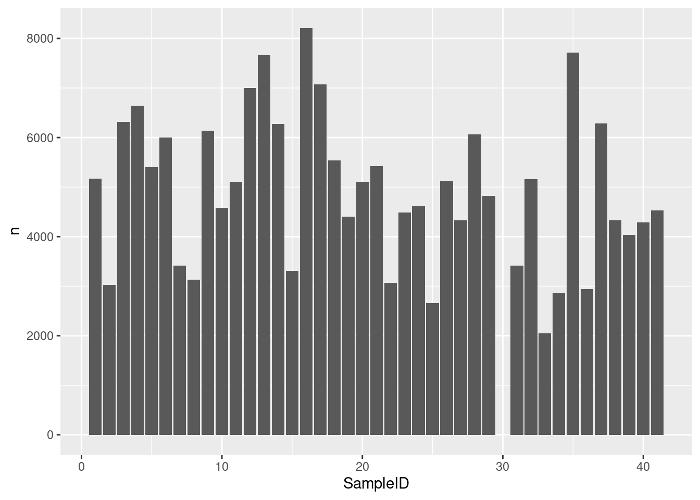
| Version | Author | Date |
|---|---|---|
| eea2c59 | schae211 | 2021-10-13 |
Number of “cell types” over all samples as annotated by the authors or the study. We mostly have tumor and immune cells. Keratin serves as a marker for cancer cells.
meta %>%
count(Group) %>%
arrange(desc(n))Next we will have a closer look at the immune populations. And according to the number of cells present, macrophages and T-cells are the major players, followed by B-cells.
meta %>%
count(immuneGroup) %>%
arrange(desc(n))Patient/Sample Metadata
Patient data provided with the raw data.
patient.info <- read_csv("data/patient_class.csv",
col_names = c("SampleID", "Classification"),
show_col_types=FALSE)
patient.info %>% slice_head(n=6)patient.info.paper <- readxl::read_xlsx("data/mmc2.xlsx",
skip = 1, col_names = TRUE)
patient.info.paper %>% slice_head(n=6)Cell Annotation
How were the cells actually annotated? In the paper they used hierachical clustering (FlowSOM). Here we will only look at the first two principal components.
When looking at the first two principal components, we see quite a clear distinction between tumor and immune cells. (Random subsetting used to reduce overplotting).
pca <- stats::prcomp(expr)
subs <- sample(nrow(pca$x), .05*nrow(pca$x))
p1 <- ggplot() +
geom_point(aes(x=seq_len(length(pca$sdev)), y = pca$sdev^2))
p2 <- ggplot() +
geom_point(aes(x=pca$x[subs,1], pca$x[subs,2],
color = meta$Group[subs]), size = 0.1) +
guides(colour = guide_legend(override.aes = list(size = 2)))
gridExtra::grid.arrange(p1, p2, ncol=2)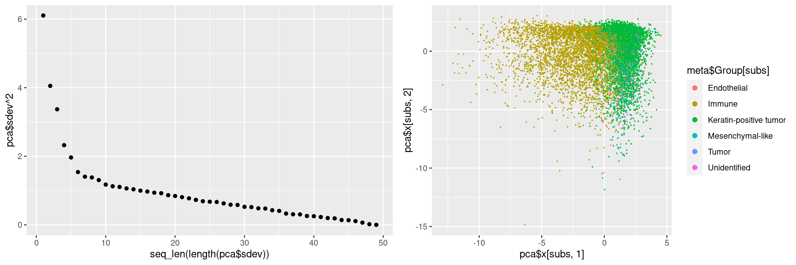
Also for the sake of it the will cluster the cells using the louvain algorithm (graph-based). See the heatmap of the marker distribution accross the clusters below.
if ("graph.clusters.RDS" %in% list.files("data")) {
graph.clusters <- readRDS("data/graph.clusters.RDS")
} else {
# shared nearest neighbor graph
snn <- bluster::makeSNNGraph(pca$x[,1:20], k = 20)
# louvain clustering
graph.clusters <- igraph::cluster_louvain(snn)$membership
saveRDS(graph.clusters, "data/graph.clusters.RDS")
}
# Making Psuedobulks per cluster
expr.matrix <- as.matrix(
expr %>%
select(- c("Background", "P", "Si", "Au", "Na", "Ca", "Ta", "dsDNA",
"Fe"))
)
pseudobulk <- as.matrix(
map_dfr(unique(graph.clusters), function(i) {
colSums(expr.matrix[graph.clusters == i,])
})
)
rownames(pseudobulk) <- unique(graph.clusters)
# Plotting Heatmap
pheatmap::pheatmap(t(pseudobulk))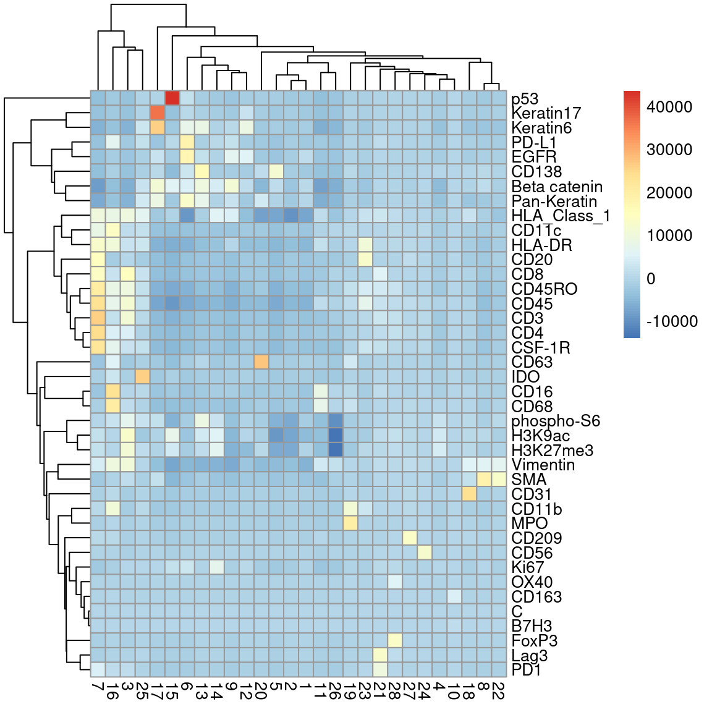
Count Data
Histograms per marker over all samples. We can see that that there is a huge variability in the expression of different markers. The measured entities other than proteins (Au, Background, Beta catentin, C, Ca, Fe, Si, Ta) were later excluded from the analysis with MISTy.
How were the “counts” normalized?
According to the readme.rtf the markers were normalized by dividing the counts by the cell size and transforming with arcsinh (inverse hyperbolic sine). Furthermore in the paper it is stated that after arcsinh transformation the markers were standard normalized.
expr %>%
pivot_longer(cols = everything(), names_to = "marker", values_to = "expression") %>%
ggplot() +
geom_histogram(aes(x=expression), bins = 100) +
facet_wrap(~ marker, scales = "free")
Looking at the boxplot for the expression per marker over all samples, ignoring outliers which are defined as points which includes all points outside of median ± 1.5 * IQR (interquantile range), we can again see the broad variability.
expr %>%
pivot_longer(cols = everything(), names_to = "marker", values_to = "expression") %>%
ggplot() +
geom_boxplot(aes(y=expression, x=marker), outlier.shape = NA) +
theme(axis.text.x = element_text(angle = 90, vjust = 0.5, hjust=1)) +
coord_cartesian(ylim = c(-5, 5))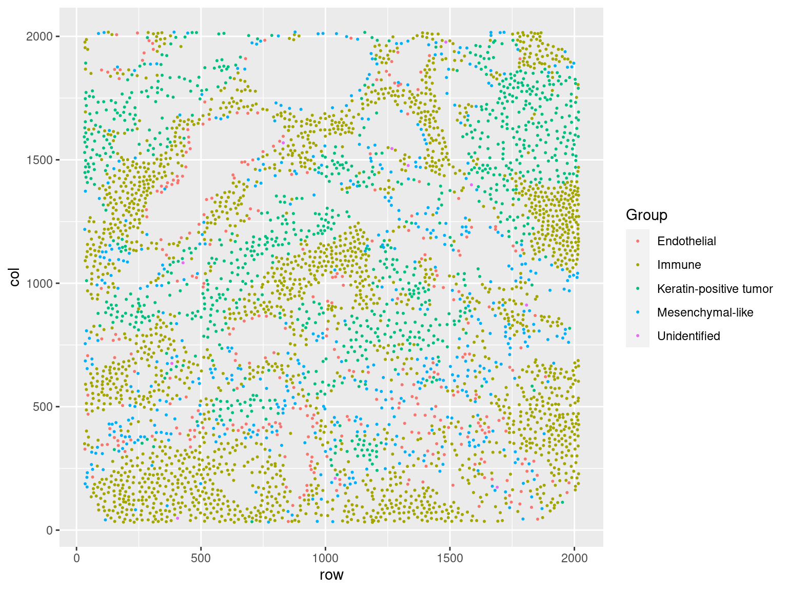
Focusing on the measured proteins, the most highly expressed species (according to the mean) are:
tibble(marker = colnames(expr), mean.expression = colMeans(expr)) %>%
filter(!(marker %in% c("Ta", "Au", "P", "Si", "C", "Na", "Ca", "Fe",
"dsDNA", "Backgrond"))) %>%
slice_max(mean.expression, n=6)Spatial Data
General
What is the scale? - 1 Pixel corresponds to about 390 nm.
We will first look at the spatial data from all samples in one plot. The cell types are annotated according to the information the authors of the original study provided.
As pointed out in their publication, one can see that there is a continuum between mixing of immune cells (yellow) and cancer tissue (green and blue). Either we can see a clear interface between both populations or they are totally mixed. This is actually associated with survival (see paper). Below this observation is quantified by calculating a similar mixing score as they did in the original publication.
meta %>%
ggplot() +
geom_point(aes(x = row, y = col, col = Group), size = .1) +
facet_wrap(~ SampleID) +
guides(colour = guide_legend(override.aes = list(size = 4)))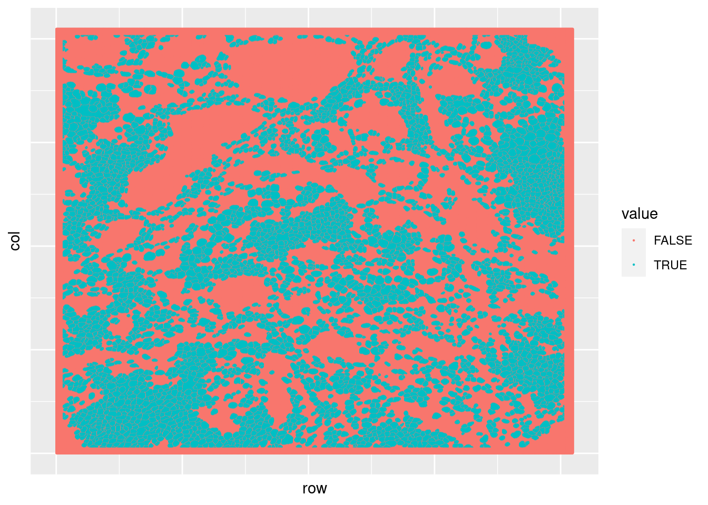
Mixing Score
Calculating the mixing score by counting for all immune cells in each sample how many contacts to they have to cancer cells divided by the contacts to other immune cells. The contacts are determined by Delaunay Triangulation and cells are only considered to be neighbors if the distance between them is below 40.
Importantly this mixing score is higher if there are more tumor cells than immune cells (as seen by the filling color of the barplot below, ratio.count.tumor.immune refers to the number of tumor cells divided by the number of immune cells).
(Remark: The authors of the paper used Haralick’s gray-level co-occurrence matrix to determine direct neighbors of each cell)
# Setting the distance threshold for what is considered a neighbor in the DT.
neighbor.thr <- 40
if ("tumor.immune.contacts.RDS" %in% list.files("data")) {
contacts.smp <- readRDS("data/tumor.immune.contacts.RDS")
} else {
coord.type.smp <- unique(meta$SampleID) %>%
set_names(paste0("s", .)) %>%
map(function(id) {
meta %>%
filter(meta$SampleID == id) %>%
select(row, col, Group) %>%
mutate(Group = ifelse(Group == "Keratin-positive tumor",
"Tumor", Group)) %>%
filter(Group %in% c("Tumor", "Immune")) %>%
mutate(id = seq_len(nrow(.)))
})
# helper function for getting direct neighbors
get_neighbors <- function(ddobj, id) {
dplyr::union(
ddobj$delsgs$ind1[which(ddobj$delsgs$ind2 == id)],
ddobj$delsgs$ind2[which(ddobj$delsgs$ind1 == id)]
)
}
contacts.smp <- coord.type.smp %>%
set_names() %>%
map_dfr(function(smp) {
delaunay <- deldir::deldir(as.data.frame(smp %>% select(row, col)))
dists <- distances::distances(as.data.frame(smp %>% select(row, col)))
ids.to.map <- smp %>% filter(Group == "Immune") %>% pull(id)
map(ids.to.map, function(i) {
alln <- get_neighbors(delaunay, i)
actualn <- alln[which(dists[alln, i] <= neighbor.thr)]
smp %>%
filter(id %in% actualn) %>%
pull(Group)
}) %>%
unlist %>%
table
})
}
meta %>%
group_by(SampleID) %>%
count(Group) %>%
pivot_wider(names_from = Group, values_from=n, names_prefix = "Count.") %>%
cbind(contacts.smp) %>%
mutate(ratio.tumor.immune = as.vector(Tumor/Immune * 100)) %>%
rename("Count.Keratin.positive.Tumor" = "Count.Keratin-positive tumor") %>%
replace(is.na(.), 0) %>%
mutate(Count.Tumor.Total = Count.Keratin.positive.Tumor + Count.Tumor) %>%
mutate(ratio.count.tumor.immune = Count.Tumor.Total / Count.Immune) %>%
ggplot() +
geom_bar(aes(x=reorder(SampleID, -ratio.tumor.immune),
y=ratio.tumor.immune,
fill=ratio.count.tumor.immune),
stat="identity") +
theme(axis.text.x = element_text(angle = 90, hjust = 1)) +
labs(x = "Sample", y = "Mixing Score") +
scale_fill_viridis_c()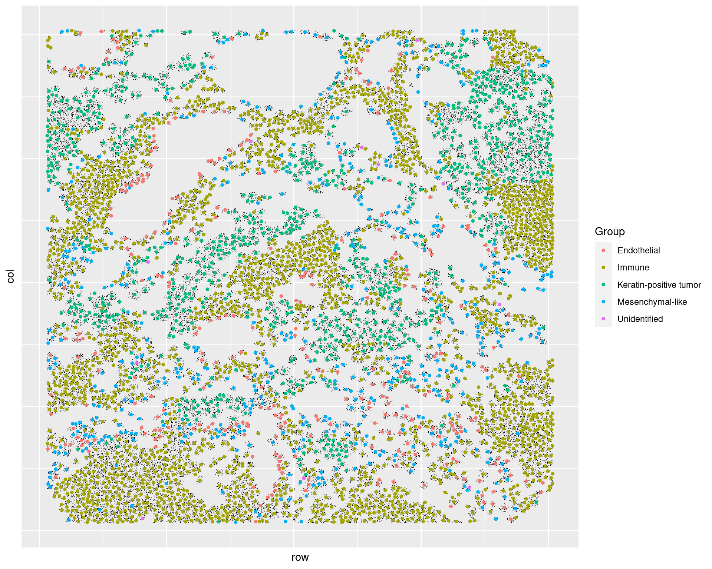
Looking at the samples with the top mixing score, namely 15, 18, 22, 24, 31, 25, 21, 26
meta %>%
filter(SampleID %in% c(15, 18, 22, 24, 31, 25, 21, 26)) %>%
ggplot() +
geom_point(aes(x = row, y = col, col = Group), size = .1) +
facet_wrap(~ SampleID, ncol = 4) +
guides(colour = guide_legend(override.aes = list(size = 4)))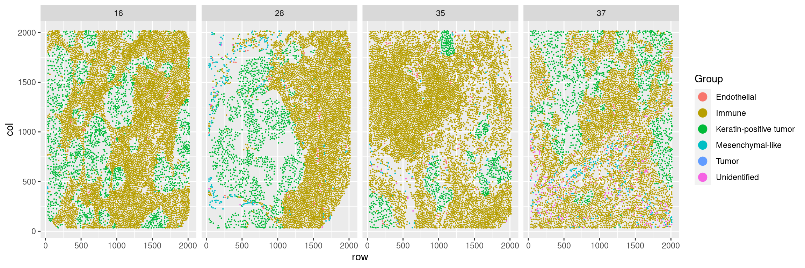
Looking at the samples with the lowest mixing score, namely 35, 28, 16, 37, 4, 40, 41, 5.
meta %>%
filter(SampleID %in% c(35, 28, 16, 37, 4, 40, 41, 5)) %>%
ggplot() +
geom_point(aes(x = row, y = col, col = Group), size = .1) +
facet_wrap(~ SampleID, ncol = 4) +
guides(colour = guide_legend(override.aes = list(size = 4)))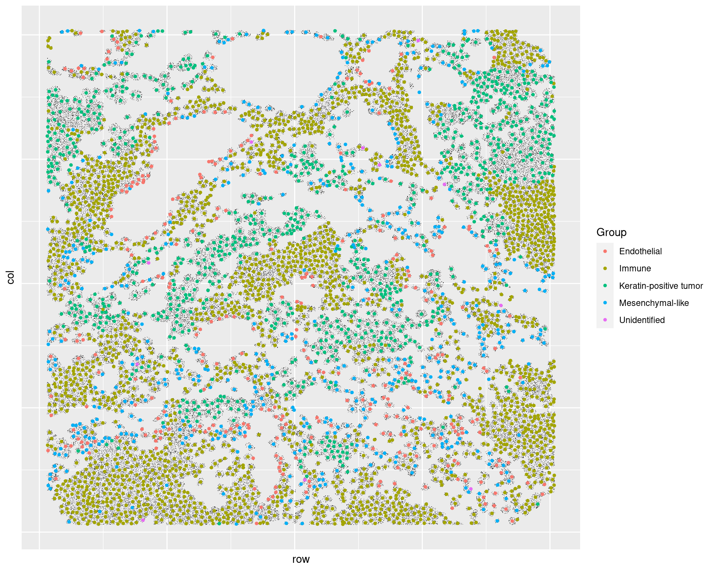
And we can see that those mixing scores resemble exactly what we see in the images.
Sample 40
Looking more closely at sample 40 to make sure that the preprocessing went right. First, we will look at the cells only using their calculated center of mass.
meta %>%
filter(SampleID == 40) %>%
ggplot() +
geom_point(aes(x = row, y = col, col = Group), size=.4) +
guides(colour = guide_legend(override.aes = list(size = 2)))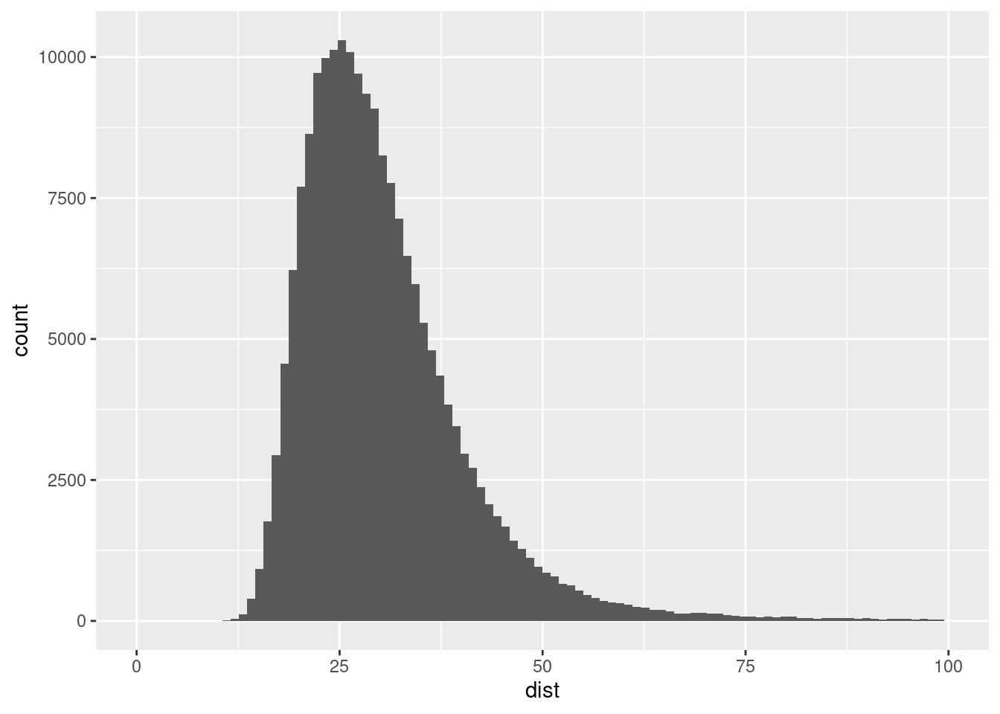
Furthermore, we will look at the tiff.
library(tiff)
id = 40
tiff <- readTIFF(paste0("data/raw_tiffs/p",
id, "_labeledcellData.tiff"), as.is = TRUE)First, the binary tiff, meaning all values that there not 0 or 1 (i.e. a cell was detected).
# get coordinates for where there was a cell detected (=: binary)
binary <- apply(tiff, c(1,2), function(n) !(n %in% c(0,1)))
binary.df <- as.data.frame(binary)
rownames(binary.df) <- seq_len(nrow(binary))
colnames(binary.df) <- seq_len(ncol(binary))
df <- binary.df %>%
rownames_to_column(var = "row") %>%
pivot_longer(cols = !(row), names_to = "col") %>%
mutate(row = as.numeric(row), col = as.numeric(col))
subs <- sample(nrow(df), .03 * nrow(df))
df %>%
slice(n = subs) %>%
mutate(cell.present = value) %>%
ggplot() +
geom_point(aes(x=row, y=col, col=cell.present), size=.1) +
theme(
axis.text.x = element_blank(),
axis.text.y = element_blank(),
axis.ticks = element_blank()) +
scale_colour_manual(values = c("TRUE" = "green2",
"FALSE" = "blue4")) +
guides(colour = guide_legend(override.aes = list(size = 2)))
Second, we will visualize the tiff and the labeled center of mass together. And on this scale the result actually looks quite nice.
s.40 <- meta %>%
filter(SampleID == 40)
tiff.40 <- df %>%
filter(value) %>%
slice_sample(., n = nrow(.)/10)
ggplot() +
geom_point(data = tiff.40, aes(x=row, y=col), col="black",
size = 0.1, stroke = 0, shape = 16) +
geom_point(data = s.40, aes(x=row, y=col, col=Group), size = .5) +
theme(
axis.text.x = element_blank(),
axis.text.y = element_blank(),
axis.ticks = element_blank()) +
guides(colour = guide_legend(override.aes = list(size = 2)))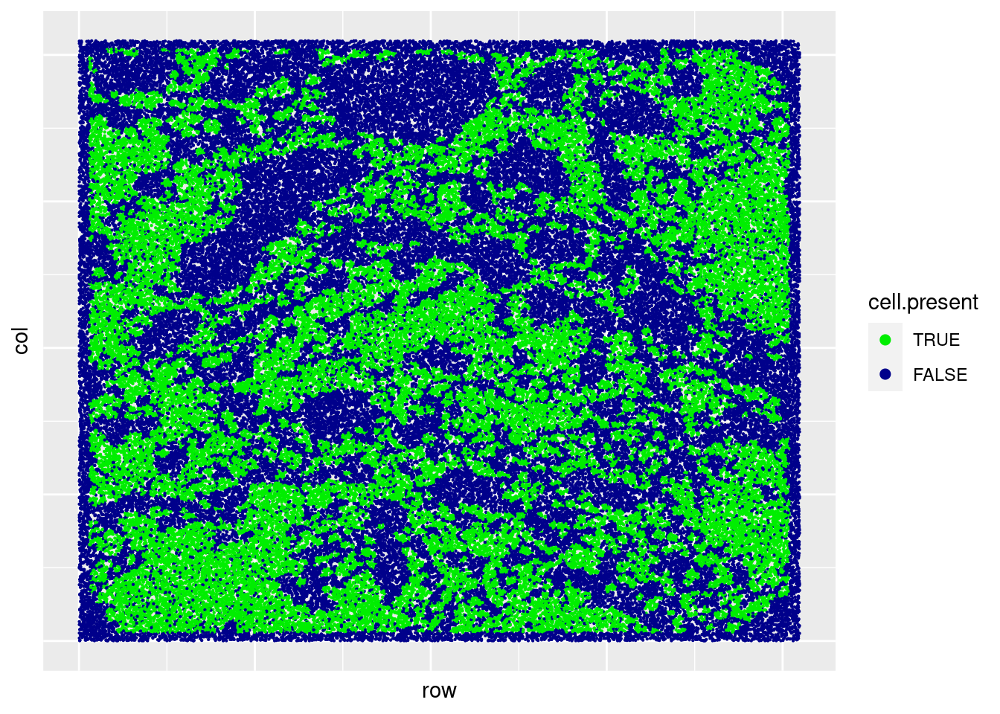
To qualitatively assess the performance of the segmentation we will furthermore look at a close up of sample 40, more specifically the region from row 0 to row 600 and from col 1448 to col 2048. And we can see that the center of mass (colored point) mostly matches the cell boundaries, but not always!
c.max <- dim(binary)[1]
top_left <- list(row = 0, col = c.max)
bottom_right <- list(row = 600, col = c.max-600)
# get the unique coordinates for each cell
tiff.df <- as.data.frame(tiff)
rownames(tiff.df) <- seq_len(nrow(tiff))
colnames(tiff.df) <- seq_len(ncol(tiff))
tiff.df.plot <- tiff.df %>%
rownames_to_column(var = "row") %>%
pivot_longer(cols = !(row), names_to = "col") %>%
mutate(row = as.numeric(row), col = as.numeric(col)) %>%
filter(!(value %in% c(0, 1))) %>%
# how to get only entry for each unique value
group_by(value) %>%
filter(row_number()==1) %>%
ungroup()
s.40 <- meta %>%
filter(SampleID == 40) %>%
filter(row >= top_left$row, row <= bottom_right$row,
col >= bottom_right$col, col <= top_left$col)
tiff.40 <- df %>%
filter(value) %>%
filter(row >= top_left$row, row <= bottom_right$row,
col >= bottom_right$col, col <= top_left$col)
labels.40 <- tiff.df.plot %>%
filter(row >= top_left$row, row <= bottom_right$row,
col >= bottom_right$col, col <= top_left$col)
ggplot() +
geom_point(data = tiff.40, aes(x=row, y=col), col="black",
size = 0.1, stroke = 0, shape = 16) +
geom_point(data = s.40, aes(x=row, y=col, col=Group), size = 3) +
theme(
axis.text.x = element_blank(),
axis.text.y = element_blank(),
axis.ticks = element_blank())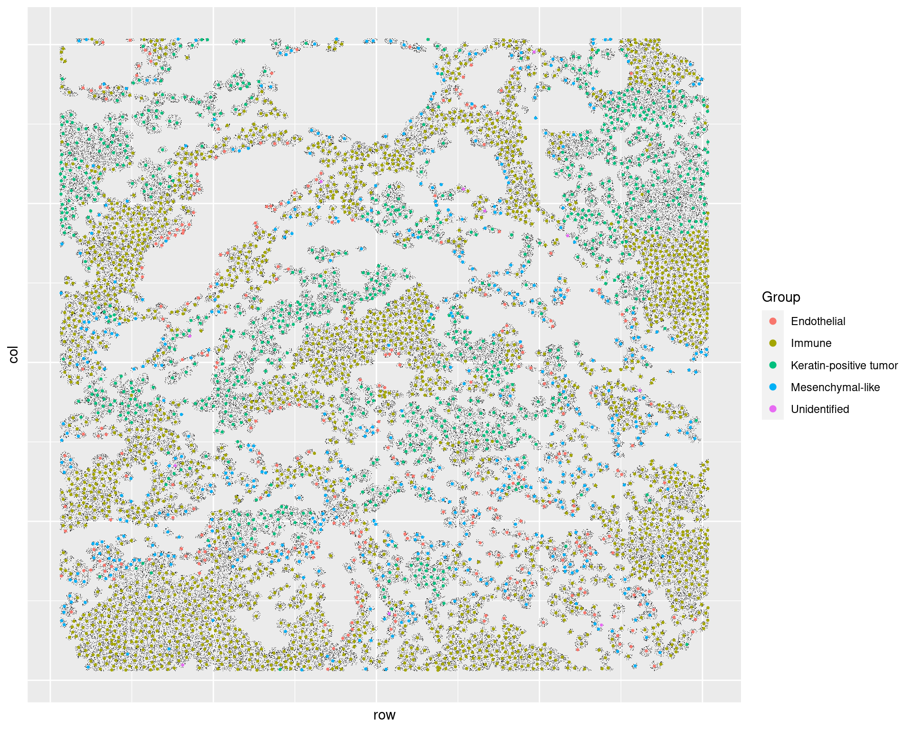
Here are the corresponding IDs for comparison to the meta data.
ggplot(labels.40) +
geom_label(aes(x = row, y = col, label = value), size = 2.5)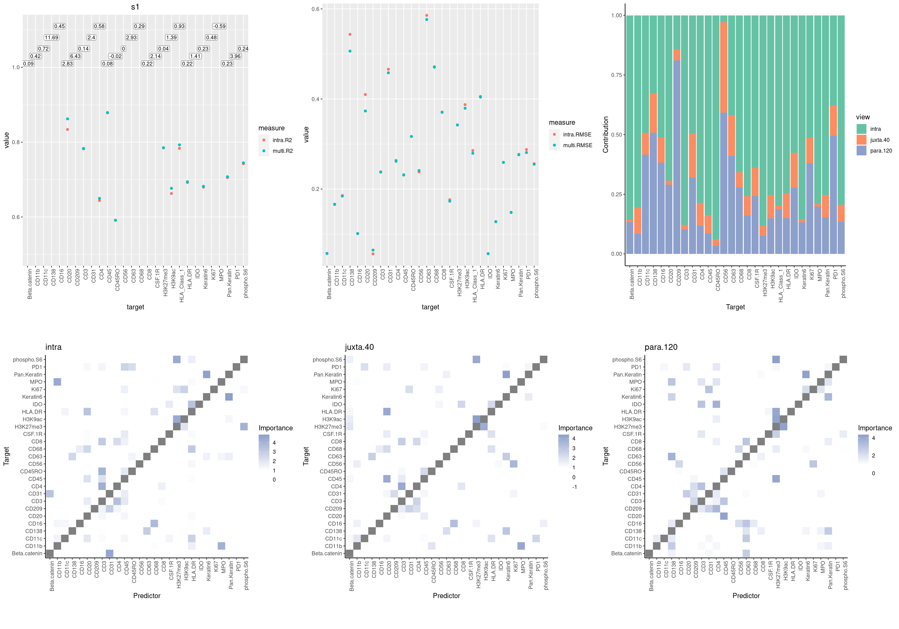
Merging Metadata
Merging the meta data with the mixing score and some other measures.
# Generating Sample Meta Data
immune.counts <- meta %>%
group_by(SampleID) %>%
count(Group) %>%
pivot_wider(names_from = Group, values_from = n,
names_prefix = "Count.")
total.counts <- meta %>%
count(SampleID) %>%
rename(Count.Total = n)
mixing.score <- round(
contacts.smp %>%
mutate(ratio.tumor.immune = Tumor/Immune * 100) %>%
pull(ratio.tumor.immune),
2)
sample.meta <- patient.info %>%
filter(SampleID != 30) %>%
mutate(ratio.tumor.immune = as.vector(mixing.score)) %>%
inner_join(immune.counts, by = "SampleID") %>%
inner_join(total.counts, by = "SampleID") %>%
# see paper Figure 3, Panel C
mutate(Classification =
case_when(Classification == 0 ~ "mixed",
Classification == 1 ~ "compartimentalized",
Classification == 2 ~ "cold")) %>%
mutate(SampleID = as.character(SampleID)) %>%
left_join(patient.info.paper, by = c("SampleID" = "InternalId"))
sample.meta %>% slice_head(n=6)Running MISTy
Preparation
Select only proteins from the expression matrix and check for NAs.
Also we need to check the variance for each marker in each same and exclude the marker if the variance is 0. The same is true for markers whose number of unique values is lower than the desired number of cv folds (here 10).
cv.folds = 10
expr.smp <- unique(meta$SampleID) %>%
set_names(paste0("s", .)) %>%
map(function(id) {
ret.expr <- expr %>%
filter(meta$SampleID == id) %>%
# Select only proteins
select(11:47)
# Check for zero variance (otherwise MISTy throws an error)
target.var <- apply(ret.expr, 2, stats::sd, na.rm = TRUE)
ret.expr <- ret.expr %>% select(-names(which(target.var == 0)))
# Check for how many unique values
target.unique <- colnames(ret.expr) %>%
purrr::set_names() %>%
purrr::map_int(~ length(unique(ret.expr %>% pull(.x))))
ret.expr <- ret.expr %>% select(
names(target.unique[target.unique > cv.folds])
)
colnames(ret.expr) <- make.names(colnames(ret.expr))
ret.expr
})
# Check NAs for sample 40
sum(map_int(names(expr.smp$s40), ~ sum(is.na(expr.smp$s40[.x]))))
[1] 0
coord.smp <- unique(meta$SampleID) %>%
set_names(paste0("s", .)) %>%
map(function(id) {
meta %>%
filter(meta$SampleID == id) %>%
select(row, col)
})
# Check NAs for sample 40
sum(map_int(names(coord.smp$s40), ~ sum(is.na(coord.smp$s40[.x]))))
[1] 0
nrow(expr.smp$s40) == nrow(coord.smp$s40)
[1] TRUEHelper function to calculate distances to the neighbors.
# helper function for nearest neighbors
dist_k_nn <- function(sample, k) {
nn <- RANN::nn2(sample, eps=0.0, k = k)
map_dbl(seq_len(nrow(sample)), function(n) {
mean(nn$nn.dists[n, ])
})
}
# helper function for getting direct neighbors
get_neighbors <- function(ddobj, id) {
dplyr::union(
ddobj$delsgs$ind1[which(ddobj$delsgs$ind2 == id)],
ddobj$delsgs$ind2[which(ddobj$delsgs$ind1 == id)]
)
}First we will look at the distribution of the mean distances to the direct neighbors (as determined by the delauney triangulation) to get a feeling for which cutoff value should be used for the generation of the juxtaview. The corresponding distribution is shown below. (in blue the cutoff - 40 pixels (15.6 microns) - which was used in the end).
# mean distance to the direct neighbors for each cell
mean.dists.direct.neighbors <- map(coord.smp, function(smp) {
delaunay <- deldir::deldir(as.data.frame(smp))
dists <- distances::distances(as.data.frame(smp))
map_dbl(seq_len(nrow(smp)), function(id) {
nn <- get_neighbors(delaunay, id)
mean(dists[nn, id])
})
})
stat.per.sample <- map2_dfr(mean.dists.direct.neighbors,
seq_len(length(mean.dists.direct.neighbors)),
function(list, smp) {
data.frame(sample = smp, value = list)
})
# histogram
ggplot(data.frame(dist = mean.dists.direct.neighbors %>% unlist)) +
geom_histogram(aes(dist), bins = 100) +
lims(x = c(0,100)) +
geom_vline(xintercept = 40, col = "blue")Warning: Removed 1331 rows containing non-finite values (stat_bin).Warning: Removed 2 rows containing missing values (geom_bar).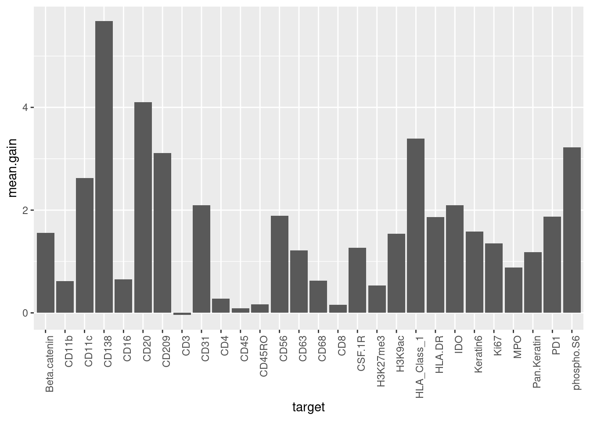
Summary statistics:
data.frame(value = mean.dists.direct.neighbors %>% unlist) %>%
summarise(mean = mean(value),
median = median(value),
q25 = quantile(value, 0.25),
q75 = quantile(value, 0.75),
min = min(value),
max = max(value))However, a more detailed look across the sample (boxplot) shows that the cutoff may be too low for certain samples. It may be good to increase this threshold to 50.
# boxplot
stat.per.sample %>%
mutate(sample = factor(sample)) %>%
ggplot() +
geom_boxplot(aes(x=sample, y=value)) +
geom_hline(yintercept = 40, col="blue") +
lims(y = c(0, 200))Warning: Removed 356 rows containing non-finite values (stat_boxplot).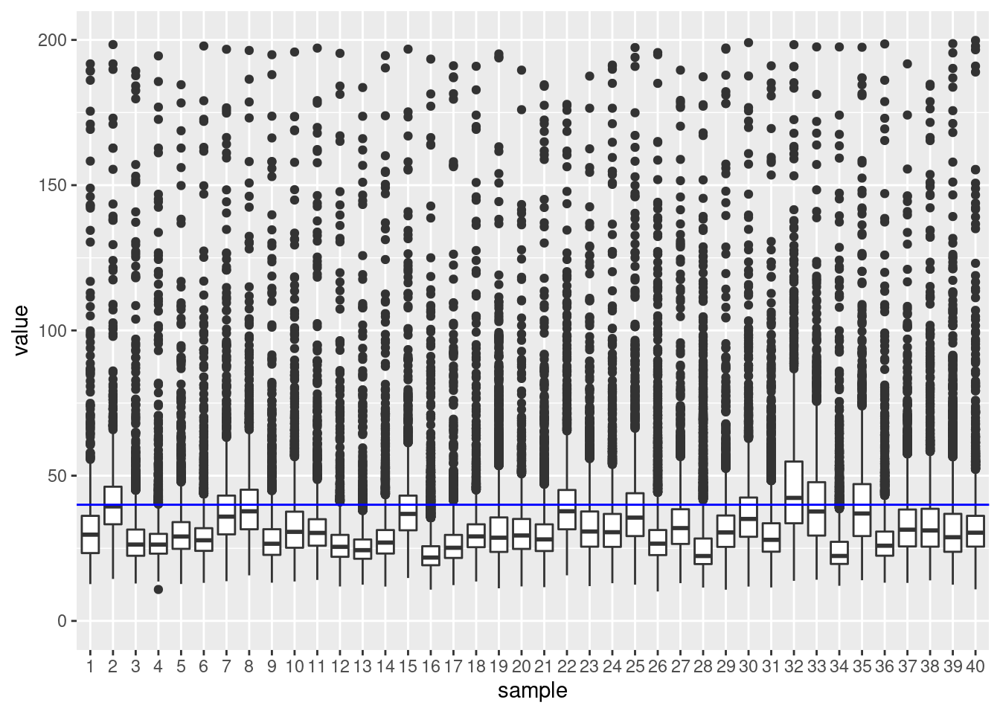
Furthermore we will look at the distribution of the mean distances to the 10 -, 20 -, 40 -, and 80 closest cells to get a feeling for which cutoff will be used to generate the paraview (in blue the cutoff - 120 pixels (46.8 microns) - which was used in the end).
neighbor.dists <- map_dfr(coord.smp, function(smp) {
c(10, 20, 40, 80) %>%
set_names() %>%
map_dfc(function(k) {
dist_k_nn(smp, k)
}) %>%
set_names(paste0("dist_to_", c("10", "20", "40", "80")))
})
neighbor.dists %>%
pivot_longer(cols = everything()) %>%
mutate(name = factor(name,
levels = paste0("dist_to_", c("10", "20", "40", "80")))) %>%
ggplot() +
geom_histogram(aes(value), bins = 100) +
facet_wrap(~ name) +
lims(x = c(0, 200)) +
geom_vline(xintercept = 120, col = "blue")Warning: Removed 490 rows containing non-finite values (stat_bin).Warning: Removed 8 rows containing missing values (geom_bar).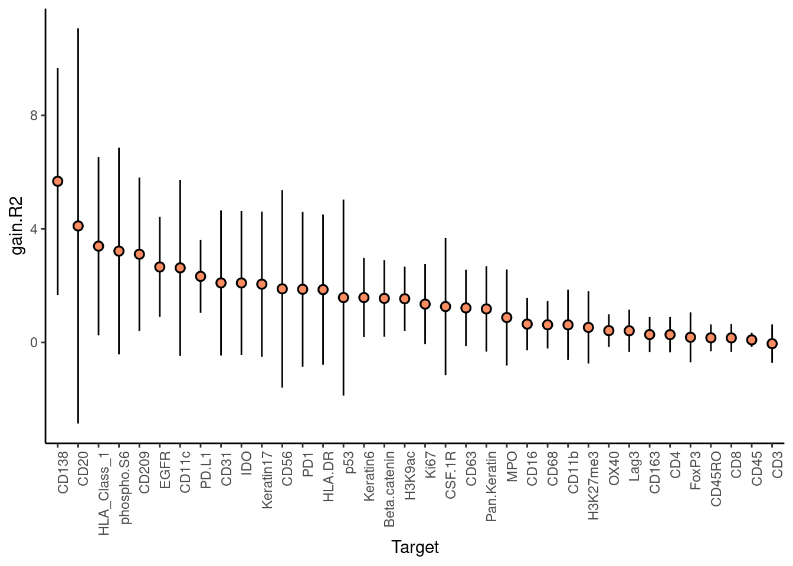
Summary statistics:
neighbor.dists %>%
pivot_longer(cols = everything()) %>%
group_by(name) %>%
summarise(mean = mean(value),
median = median(value),
q25 = quantile(value, 0.25),
q75 = quantile(value, 0.75),
min = min(value),
max = max(value))Generating the MISTy views
Based on the data above, the following parameters (thresholds) were used to run MISTy: * Juxtaview: threshold 40, * Paraview: theshold 120, zone of indifference: 40
if ("misty_views_smp.RDS" %in% list.files("data")) {
misty.views.smp <- readRDS("data/misty_views_smp.RDS")
} else {
misty.views.smp <- map(expr.smp, coord.smp, function(expr, coord) {
# Create views and run MISTy
create_initial_view(expr) %>%
add_juxtaview(positions = coord, neighbor.thr = 40) %>%
add_paraview(positions = coord, l = 120, zoi = 40)
})
names(misty.views.smp) <- names(expr.smp)
saveRDS(misty.views.smp, "data/misty_views_smp.RDS")
}Random Forest Implementation
Running with random forest as ML algorithm to build the view-specific models.
if ("ranger.results.RDS" %in% list.files("data")) {
ranger.results <- readRDS("data/ranger.results.RDS")
} else {
cv.folds = 10
ranger.results.folders <- map2(
misty.views.smp, names(misty.views.smp), function(smp, name) {
smp %>% run_misty(results.folder = paste0("analysis/results/ranger_", name),
cv.folds = cv.folds)
})
ranger.results <- collect_results(ranger.results.folders)
saveRDS(ranger.results, "data/ranger.results.RDS")
}MISTy Results
Gain R2
We can see that there is quite some gain in variance when taking the expression of neighboring cells into account. However, looking at the errorbars we can also see that there is a large variability between the samples.
mistyR::plot_improvement_stats(ranger.results)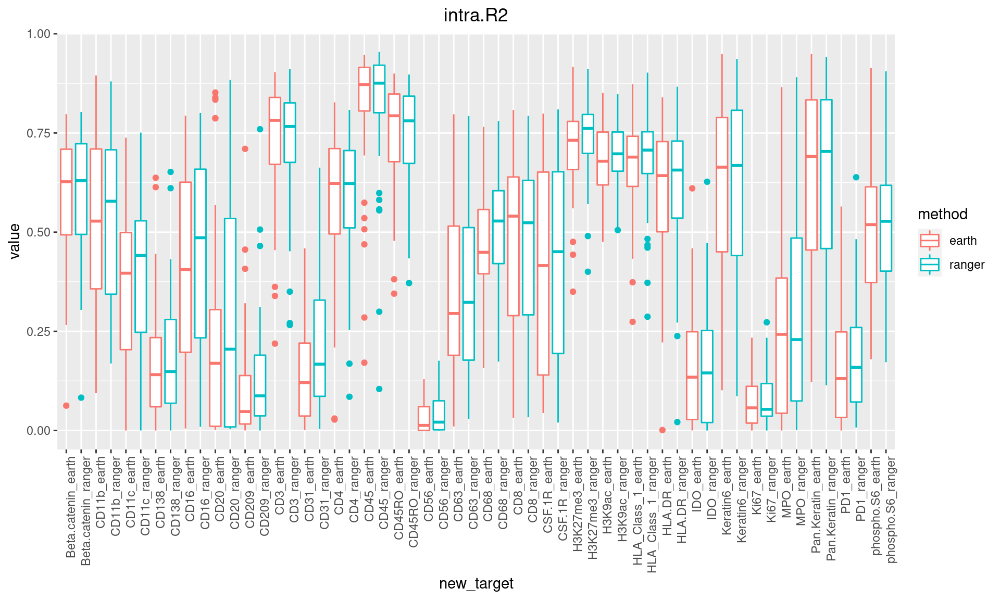
Let’s look at a heatmap first to see how the gain.R2 stat is distributed across the samples and targets.
Keep in mind that I replaced all NA values for the gain.R2 with 0 so the clustering is actually possible (we need to be able to compute distances!). I think this is fair since the marker basically absent and there can be no gain in R2.
ranger.results$improvements %>%
filter(measure == "gain.R2") %>%
mutate(sample = str_extract(sample, "(?<=_s)[0-9]+")) %>%
select(-measure) %>%
pivot_wider(names_from = target) %>%
replace(is.na(.), 0) %>%
as.data.frame() %>%
column_to_rownames(var = "sample") %>%
as.matrix() %>%
pheatmap::pheatmap()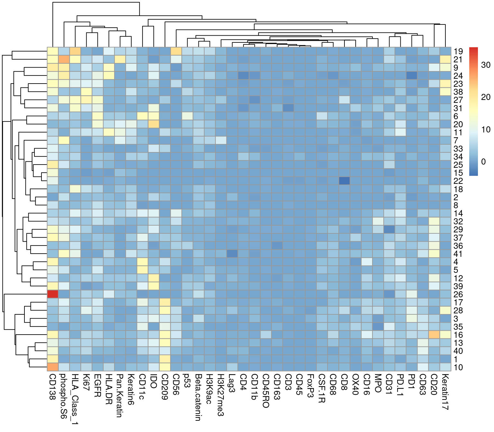
We can see in the dendogram that there is some structure in the samples regarding their gain.R2 signature. But what is driving this structure? In the following we are going to classify the cells based on the hierachical clustering and compare the properties of these clusters.
We will take 10 clusters but remove all clusters that have only one sample in them. This results in 7 clusters overall.
k = 10
hc <- ranger.results$improvements %>%
filter(measure == "gain.R2") %>%
mutate(sample = str_extract(sample, "(?<=_s)[0-9]+")) %>%
select(-measure) %>%
pivot_wider(names_from = target) %>%
replace(is.na(.), 0) %>%
as.data.frame() %>%
column_to_rownames(var = "sample") %>%
as.matrix() %>%
dist() %>%
hclust()
plot(hc)
rect.hclust(hc , k = k, border = 2:6)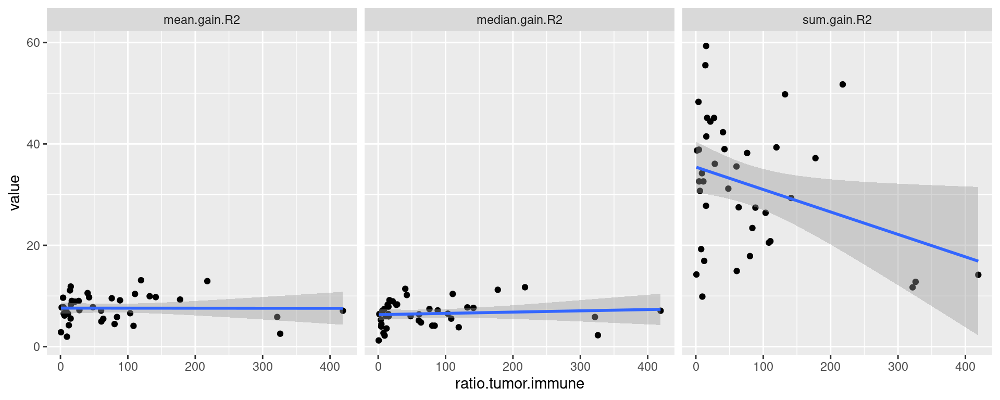
Merging cluster for sample 19 and 21 and removing cluster for sample 26 from the analysis.
hc.clusters <- cutree(hc, k = k)
hc.clusters["21"] <- hc.clusters["19"]
n <- unique(hc.clusters) %>%
set_names() %>%
map_int(function(i) {
s <- sum(hc.clusters == i)
})
keep <- names(n)[which(n > 1)]
n 1 2 3 4 5 6 7 9 10
5 10 4 10 2 2 2 4 1 Now visualize the heatmap again with the clusters.
col.annotation <- data.frame(cluster = factor(hc.clusters))
rownames(col.annotation) <- names(hc.clusters)
ranger.results$improvements %>%
filter(measure == "gain.R2") %>%
mutate(sample = str_extract(sample, "(?<=_s)[0-9]+")) %>%
left_join(tibble(sample = names(hc.clusters), cluster = hc.clusters),
by = "sample") %>%
filter(cluster %in% keep) %>%
select(-c(measure, cluster)) %>%
pivot_wider(names_from = target) %>%
replace(is.na(.), 0) %>%
as.data.frame() %>%
column_to_rownames(var = "sample") %>%
as.matrix() %>%
pheatmap::pheatmap(., annotation_row = col.annotation)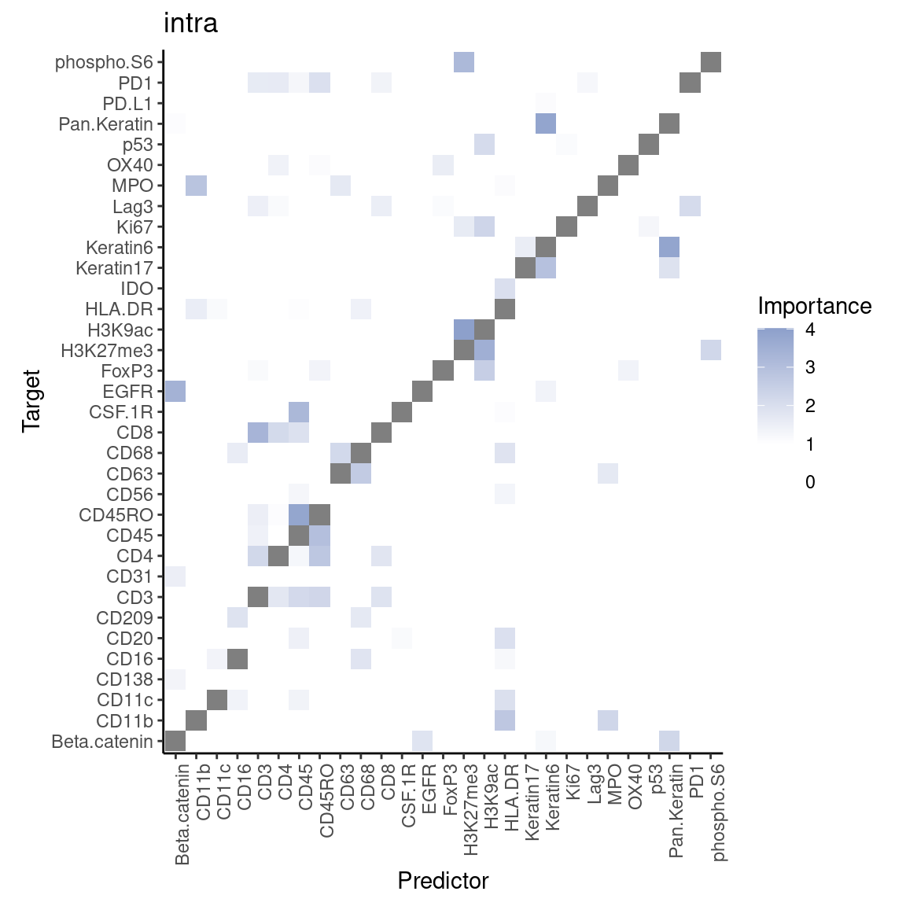
Do these clusters still make sense if we do not replace NA by 0?
It looks ok, though we see that for cluster 2 there are simply many missing data points. The reason being that these samples contain very few immune cells and thus miss certain markers.
tmp <- ranger.results$improvements %>%
filter(measure == "gain.R2") %>%
mutate(sample = str_extract(sample, "(?<=_s)[0-9]+")) %>%
left_join(tibble(sample = names(hc.clusters), cluster = hc.clusters),
by = "sample") %>%
filter(cluster %in% keep) %>%
select(-c(measure, cluster)) %>%
pivot_wider(names_from = target) %>%
as.data.frame() %>%
column_to_rownames(var = "sample") %>%
as.matrix()
# order based on annotation
ordered <- tmp[names(hc.clusters[hc.clusters %in% keep] %>% sort), ]
pheatmap::pheatmap(ordered, annotation_row = col.annotation,
cluster_rows = FALSE, cluster_cols = FALSE)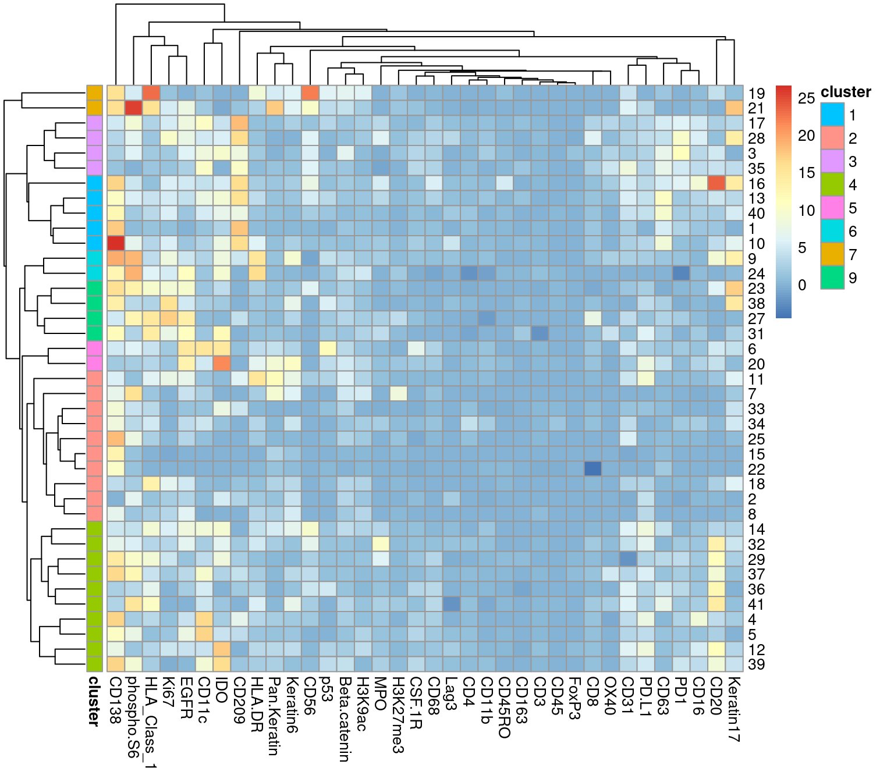
What is actually the difference in gain R2 across the different clusters? For which targets does a certain cluster show better performance compared to other clusters? Let’s collapse the clusters from the above heatmap, using the mean gain in R2 for each target.
ranger.results$improvements %>%
filter(measure == "gain.R2") %>%
mutate(sample = str_extract(sample, "(?<=_s)[0-9]+")) %>%
left_join(tibble(sample = names(hc.clusters), cluster = hc.clusters),
by = "sample") %>%
filter(cluster %in% keep) %>%
group_by(cluster, target) %>%
summarise(m.gain.R2 = mean(value), .groups = "keep") %>%
pivot_wider(names_from=target, values_from=m.gain.R2) %>%
column_to_rownames(var="cluster") %>%
as.matrix() %>%
pheatmap::pheatmap(cluster_rows = FALSE, cluster_cols = FALSE)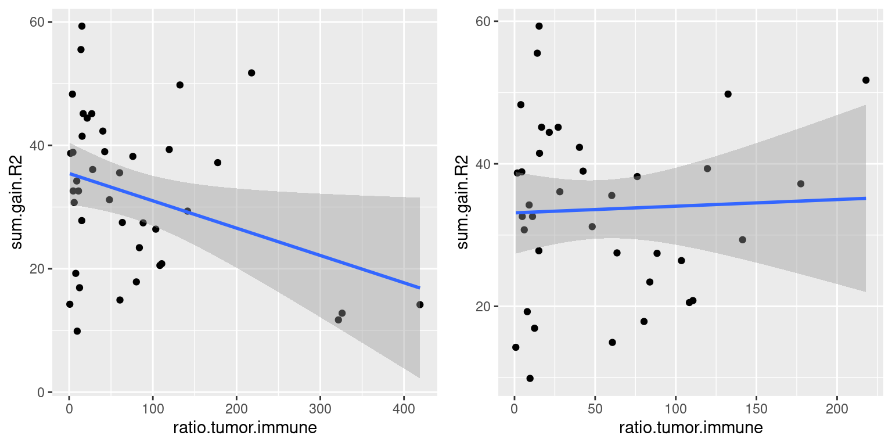
Cluster 6: Strong gain for pS6 and CD138, and especially some exclusive (not seen in other samples) gain in R2 for HLA.DR. Mild gains for CD20, EGFR, and IDO.
Cluster 2: Almost no gain in explained variance except for CD138.
Cluster 3: Almost no gain in explained variance except for CD11c, CD209, and PD1. Interestingly the only cluster where I see much gain for PD1 and CD209 (shared with cluster 1). Also one of the only clusters without gain R2 for CD138 (shared with cluster 5).
Cluster 4: Gain in R2 for CD11c, CD138, CD20, and also mild gains for IDO and pS6.
Cluster 1: Gain in R2 for CD138, CD20, CD209, IDO, and Keratin 17. Only cluster with interesting gain in R2 for CD63 (marker for basophils?)
Cluster 5: Strongest gain in R2 for IDO and EGFR across all clusters. Only cluster with interesting gain in R2 for p53 and Pan.Keratin. Apart from that also some gain in R2 for CD11c.
Cluster 9: Only cluster with interesting gain in R2 for Ki67 (marker for proliferation?) and HLA_Class_1. Furthermore gains for pS6, Keratin17, EGFR, and CD138.
Cluster 7: Only cluster with interesting gain in R2 for CD56 (marker for NK).
What differentiates the samples in one cluster from another?
Cell Counts and Mixing Score
Could these quantitaive properties explain the differences:
ratio.tumor.immune
Count.Immune
Count.Tumor
Count.Endothelial
Count.Mesenchymal.like
Count.Total
One can immediately see that cluster 2 has a higher ration of tumor-immune to immune-immune contact, though this effect seems to be mainly driven by the cold tumors (low number of immune cells).
In general cluster 2 contains the samples with low total cell numbers and with a high number of tumor cells compared to immune cells, leading to the classification being either cold or mixed.
It kind of fits that we have a relatively high number of tumor cells in cluster 9, and that we saw a gain in explained variance for pS6 and Ki67.
sample.meta %>%
left_join(tibble(sample = names(hc.clusters), cluster = factor(hc.clusters)),
by = c("SampleID" = "sample")) %>%
filter(cluster %in% keep) %>%
rename("Count.Keratin.positive.Tumor" = "Count.Keratin-positive tumor",
"Count.Mesenchymal.like" = "Count.Mesenchymal-like") %>%
mutate(Count.Tumor = Count.Tumor + Count.Keratin.positive.Tumor) %>%
pivot_longer(cols = c(ratio.tumor.immune, Count.Immune, Count.Tumor,
Count.Endothelial, Count.Mesenchymal.like, Count.Total),
names_to = "statistic", values_to = "value") %>%
ggplot() +
geom_boxplot(aes(x = cluster, y = value), outlier.shape=NA) +
geom_jitter(aes(x = cluster, y = value, col = Classification), size=.8, width=.3) +
facet_wrap(~ statistic, scales = "free", ncol = 3) +
theme(legend.position="top") +
scale_color_manual(values = c("mixed" = "indianred",
"compartimentalized" = "forestgreen",
"cold" = "royalblue"))Warning: Removed 4 rows containing non-finite values (stat_boxplot).Warning: Removed 4 rows containing missing values (geom_point).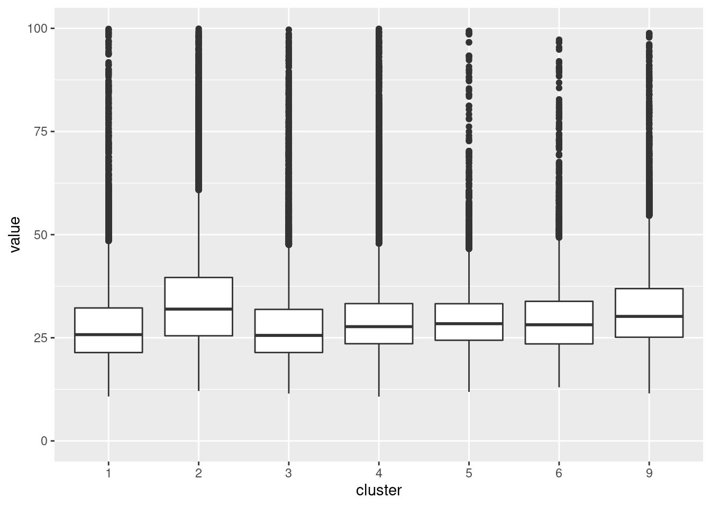
What about the immune cell types which are present?
meta %>%
mutate(SampleID = as.character(SampleID)) %>%
left_join(tibble(sample = names(hc.clusters), cluster = factor(hc.clusters)),
by = c("SampleID" = "sample")) %>%
filter(cluster %in% keep) %>%
filter(immuneGroup != "Non-Immune?") %>%
group_by(cluster, SampleID) %>%
count(immuneGroup) %>%
ggplot() +
geom_boxplot(aes(x=cluster, y=n)) +
facet_wrap(~ immuneGroup, scales = "free")
| Version | Author | Date |
|---|---|---|
| 4dd0190 | schae211 | 2021-10-25 |
| b9bdcf8 | schae211 | 2021-10-22 |
| 4df87c6 | schae211 | 2021-10-22 |
| 8cb127d | schae211 | 2021-10-21 |
| b575d1a | schae211 | 2021-10-21 |
| d93e752 | schae211 | 2021-10-20 |
| ef76a7d | schae211 | 2021-10-20 |
| 35c3b36 | schae211 | 2021-10-20 |
| 42bc887 | schae211 | 2021-10-20 |
| 74c1c9a | schae211 | 2021-10-19 |
| 5c6e1e1 | schae211 | 2021-10-19 |
| cdd0218 | schae211 | 2021-10-19 |
| 0d26834 | schae211 | 2021-10-19 |
Though it may be more informative to actually look at the cell ratios, or proportions.
Spatial Distribution
What about the spatial distribution of the cells? Could it be a contributing factor? Let’s look at the mean distances to the neighboring cells (as determined by Delaunay Triangulation) for each cell in a given cluster.
And it seems like the distances are larger cluster 2 compared to the rest. This could explain the overall low gain in R2.
stat.per.sample %>%
mutate(sample = as.character(sample)) %>%
inner_join(tibble(sample = names(hc.clusters), cluster = factor(hc.clusters)),
by = "sample") %>%
filter(cluster %in% keep) %>%
ggplot() +
geom_boxplot(aes(x=cluster, y=value)) +
lims(y = c(0, 100))Warning: Removed 1244 rows containing non-finite values (stat_boxplot).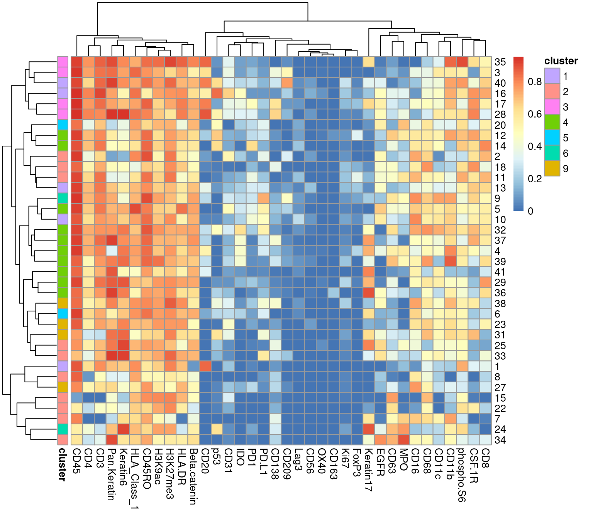
Classification
What about the proportion of the classification (referring to mixed, compartmentalized, or cold) accross the clusters?
p1 <- sample.meta %>%
left_join(tibble(sample = names(hc.clusters), cluster = factor(hc.clusters)),
by = c("SampleID" = "sample")) %>%
filter(cluster %in% keep) %>%
rename("Count.Keratin.positive.Tumor" = "Count.Keratin-positive tumor",
"Count.Mesenchymal.like" = "Count.Mesenchymal-like") %>%
mutate(Count.Tumor = Count.Tumor + Count.Keratin.positive.Tumor) %>%
group_by(cluster) %>%
summarise(n = n(),
n.mixed = sum(Classification == "mixed"),
n.comp = sum(Classification == "compartimentalized"),
n.cold = sum(Classification == "cold")) %>%
mutate(fraction.mixed = n.mixed/n,
fraction.comp = n.comp/n,
fraction.cold = n.cold/n) %>%
pivot_longer(cols = starts_with("frac")) %>%
ggplot() +
geom_col(aes(x = cluster, y = value, fill = name)) +
geom_text(aes(x = cluster, y = 0.99, label = n), vjust = -0.5) +
scale_fill_manual(values = c("fraction.mixed" = "indianred",
"fraction.comp" = "forestgreen",
"fraction.cold" = "royalblue")) +
labs(title = "Fractions")
p2 <- sample.meta %>%
left_join(tibble(sample = names(hc.clusters), cluster = factor(hc.clusters)),
by = c("SampleID" = "sample")) %>%
filter(cluster %in% keep) %>%
rename("Count.Keratin.positive.Tumor" = "Count.Keratin-positive tumor",
"Count.Mesenchymal.like" = "Count.Mesenchymal-like") %>%
mutate(Count.Tumor = Count.Tumor + Count.Keratin.positive.Tumor) %>%
group_by(cluster) %>%
summarise(n = n(),
n.mixed = sum(Classification == "mixed"),
n.comp = sum(Classification == "compartimentalized"),
n.cold = sum(Classification == "cold")) %>%
pivot_longer(cols = starts_with("n.")) %>%
ggplot() +
geom_col(aes(x = cluster, y = value, fill = name)) +
scale_fill_manual(values = c("n.mixed" = "indianred",
"n.comp" = "forestgreen",
"n.cold" = "royalblue")) +
labs(title = "Absolute Numbers")
gridExtra::grid.arrange(p1, p2, ncol = 2)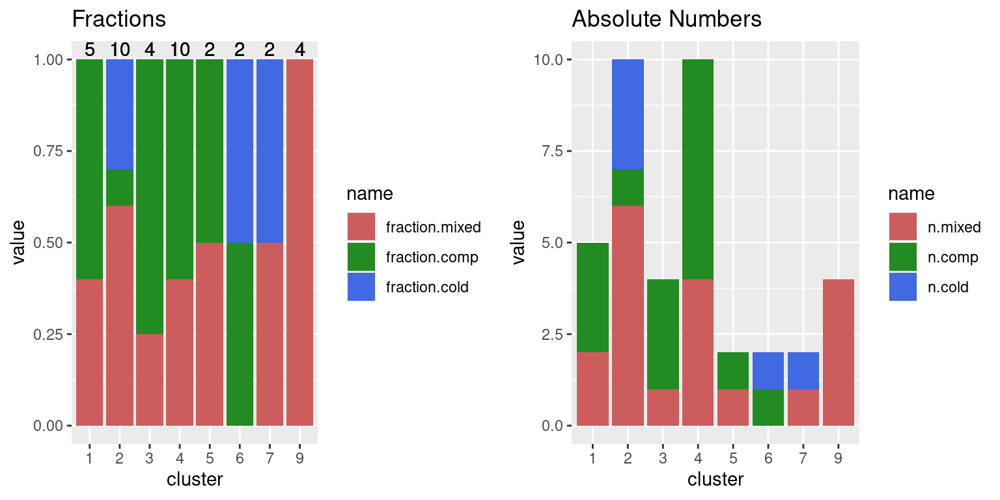
Intra and Multiview
Could it also be possible that the the intraview R2 somehow explains the clustering we see in the gain.R2. Meaning samples in which the intraview R2s are rather low and samples in which it is rather high?
First, we one can note that for the targets there seem to be three distinct clusters. On the left the intra R2 is rather high, in the middle the intra R2 is rather low, and on the right the intra R2 values are mixed across the samples.
Regarding the question, the clusters seem to be somewhat preserved, so the intraview R2 probably has something to do with the observed clusterin in gain R2 (the intraview basically determines the potential of gaining explained variance).
ranger.results$improvements %>%
filter(measure == "intra.R2") %>%
mutate(sample = str_extract(sample, "(?<=_s)[0-9]+")) %>%
left_join(tibble(sample = names(hc.clusters), cluster = hc.clusters),
by = "sample") %>%
filter(cluster %in% keep) %>%
select(-c(measure, cluster)) %>%
pivot_wider(names_from = target) %>%
replace(is.na(.), 0) %>%
as.data.frame() %>%
column_to_rownames(var = "sample") %>%
as.matrix() %>%
pheatmap::pheatmap(., annotation_row = col.annotation)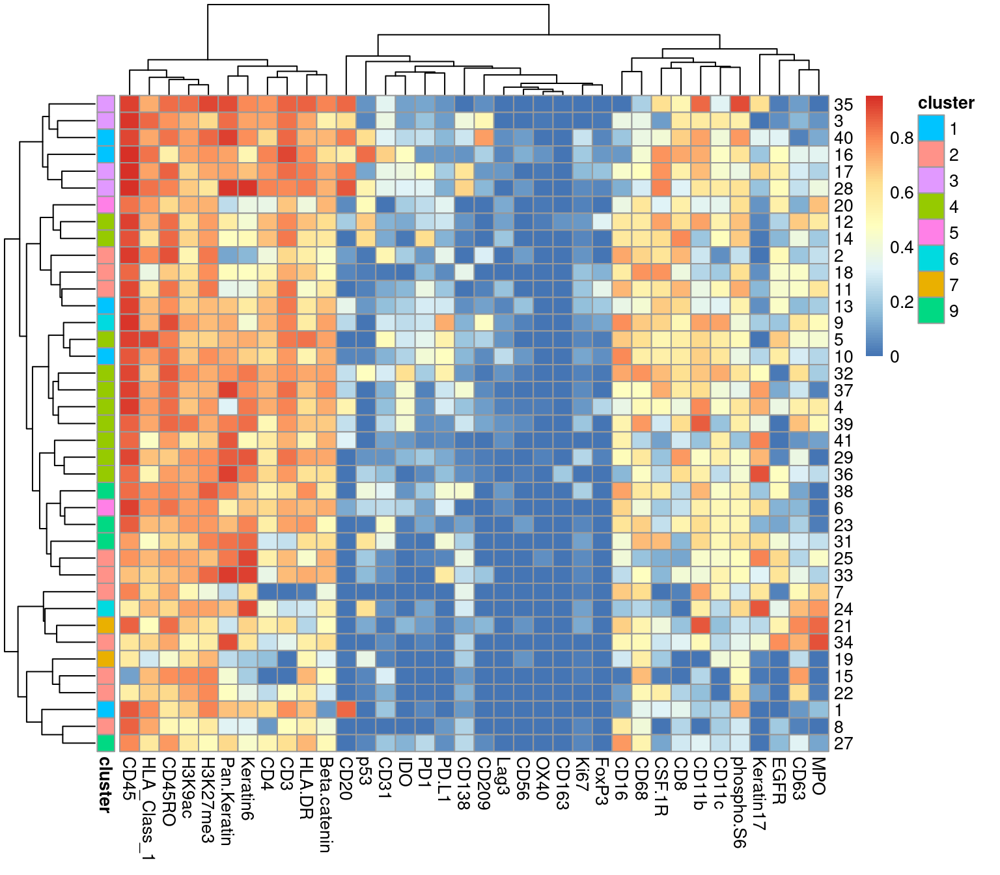
How does the multiview R2 heatmap look like?
Regarding the sample clusters one can see quite clearly that the clusters from the gain.R2 statistic are not fully preserved. For a given sample the neighboring samples often belong to the same cluster, but the clusters seem to be broken into several smaller subsets (e.g. look at clusters 2 and 4).
ranger.results$improvements %>%
filter(measure == "multi.R2") %>%
mutate(sample = str_extract(sample, "(?<=_s)[0-9]+")) %>%
left_join(tibble(sample = names(hc.clusters), cluster = hc.clusters),
by = "sample") %>%
filter(cluster %in% keep) %>%
select(-c(measure, cluster)) %>%
pivot_wider(names_from = target) %>%
replace(is.na(.), 0) %>%
as.data.frame() %>%
column_to_rownames(var = "sample") %>%
as.matrix() %>%
pheatmap::pheatmap(., annotation_row = col.annotation)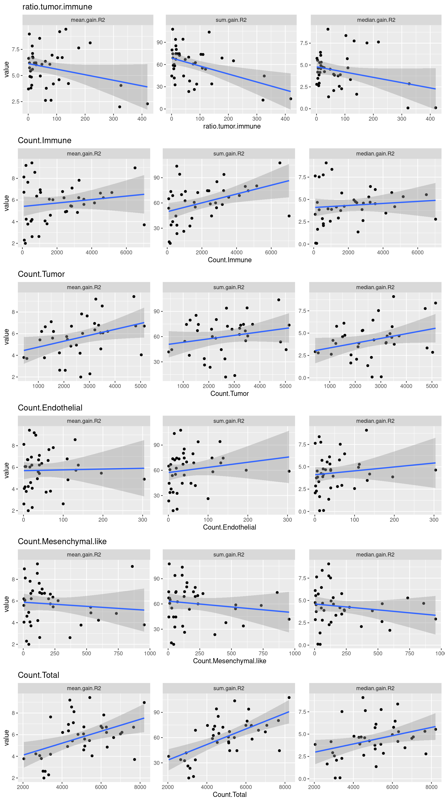
Another way to go about this investigation may be to select the top targets in terms of gain R2 and then check what this gain R2 is correlated with The details can be found below.
From the Targets
Let’s take the 12 targets (1/3 of all targets) for which the mean gain.R2 is the largest and investigate the differences between the samples.
top.targets <- ranger.results$improvements %>%
filter(measure == "gain.R2") %>%
group_by(target) %>%
summarise(mean.gain.R2 = mean(value), .groups = "drop") %>%
slice_max(mean.gain.R2, n=12) %>%
pull(target)
top.targets [1] "CD138" "CD209" "phospho.S6" "IDO" "CD20"
[6] "EGFR" "HLA_Class_1" "Keratin17" "CD11c" "Ki67"
[11] "CD56" "PD.L1" How should the summarise the gained explained variance per sample? Sum it up, take the mean, median?
plots <- map2(c(mean, median, sum), c("Mean", "Median", "Sum"), function(func, name) {
ranger.results$improvements %>%
filter(measure == "gain.R2") %>%
filter(target %in% top.targets) %>%
mutate(sample = str_extract(sample, "(?<=_s)[0-9]+")) %>%
group_by(sample) %>%
summarise(stat = func(value), .groups = "keep") %>%
ggplot() +
geom_bar(aes(x = reorder(sample, -stat), y = stat),
stat = "identity") +
labs(title = name)
})
do.call(gridExtra::grid.arrange, c(plots, ncol=1))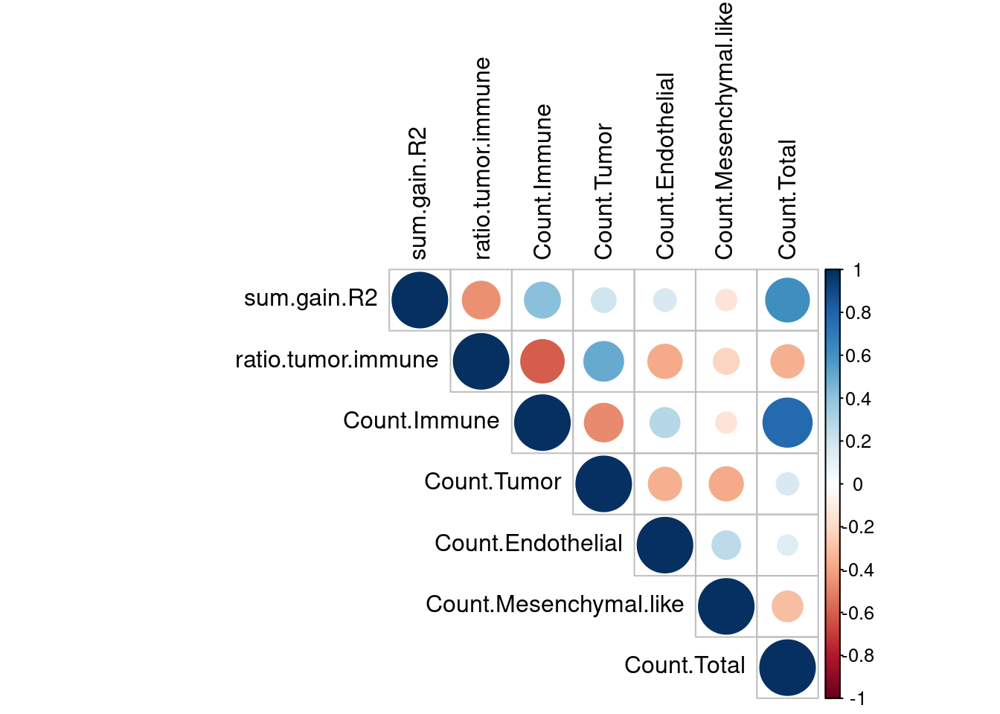
To know which statistic might be useful, we should figure out how our gain.R2 stat for each sample is dependent on the targets.
ordering <- ranger.results$improvements %>%
filter(measure == "gain.R2") %>%
mutate(sample = str_extract(sample, "(?<=_s)[0-9]+")) %>%
group_by(sample) %>%
summarise(m = median(value)) %>%
arrange(desc(m)) %>%
pull(sample)
ranger.results$improvements %>%
filter(measure == "gain.R2") %>%
filter(target %in% top.targets) %>%
mutate(sample = str_extract(sample, "(?<=_s)[0-9]+")) %>%
mutate(sample = factor(sample, levels = ordering)) %>%
ggplot() +
geom_boxplot(aes(x = sample, y = value))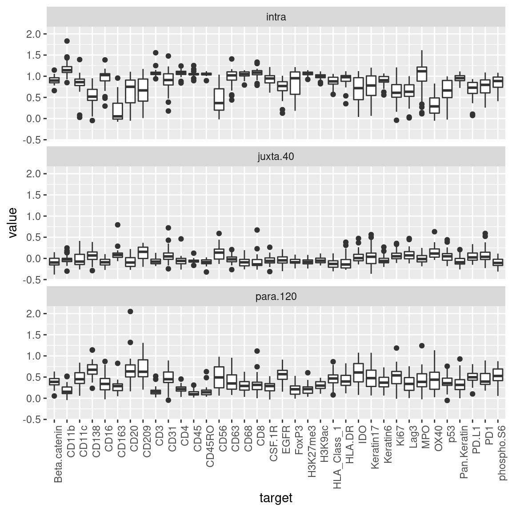
Let’s look at some correlation between other sample features and the gained explained variance (R2).
Quantiative Predictors:
Mixing score
Count of immune cells
Count of tumor cells
Count of endothelial cells
Count of mesenchymal-like cells
Total cell count
plots <- map(c("ratio.tumor.immune", "Count.Immune", "Count.Tumor",
"Count.Endothelial", "Count.Mesenchymal.like", "Count.Total"),
function(test.var) {
ranger.results$improvements %>%
filter(measure == "gain.R2") %>%
filter(target %in% top.targets) %>%
mutate(sample = str_extract(sample, "(?<=_s)[0-9]+")) %>%
group_by(sample) %>%
summarise(sum.gain.R2 = sum(value), mean.gain.R2 = mean(value),
median.gain.R2 = median(value), .groups = "drop") %>%
left_join(sample.meta %>%
rename("Count.Keratin.positive.Tumor" = "Count.Keratin-positive tumor",
"Count.Mesenchymal.like" = "Count.Mesenchymal-like") %>%
mutate(Count.Tumor = Count.Tumor + Count.Keratin.positive.Tumor),
by = c("sample" = "SampleID")) %>%
pivot_longer(cols = c(sum.gain.R2, mean.gain.R2, median.gain.R2),
names_to = "stat") %>%
mutate(stat = factor(stat, levels = c("mean.gain.R2", "sum.gain.R2", "median.gain.R2"))) %>%
ggplot() +
geom_point(aes(x = !!sym(test.var), y = value, col = Classification)) +
geom_smooth(aes(x = !!sym(test.var), y = value),
formula = y ~ x, method = "lm") +
facet_wrap(~ stat, ncol=3, scales="free_y") +
labs(title = test.var)
})
do.call(gridExtra::grid.arrange, c(plots, ncol=1))Warning: Removed 12 rows containing non-finite values (stat_smooth).Warning: Removed 12 rows containing missing values (geom_point).
What about the same plots without cold samples? The results looks quite different.
plots <- map(c("ratio.tumor.immune", "Count.Immune", "Count.Tumor",
"Count.Endothelial", "Count.Mesenchymal.like", "Count.Total"),
function(test.var) {
ranger.results$improvements %>%
filter(measure == "gain.R2") %>%
filter(target %in% top.targets) %>%
mutate(sample = str_extract(sample, "(?<=_s)[0-9]+")) %>%
group_by(sample) %>%
summarise(sum.gain.R2 = sum(value), mean.gain.R2 = mean(value),
median.gain.R2 = median(value), .groups = "drop") %>%
left_join(sample.meta %>%
rename("Count.Keratin.positive.Tumor" = "Count.Keratin-positive tumor",
"Count.Mesenchymal.like" = "Count.Mesenchymal-like") %>%
mutate(Count.Tumor = Count.Tumor + Count.Keratin.positive.Tumor),
by = c("sample" = "SampleID")) %>%
pivot_longer(cols = c(sum.gain.R2, mean.gain.R2, median.gain.R2),
names_to = "stat") %>%
mutate(stat = factor(stat, levels = c("mean.gain.R2", "sum.gain.R2", "median.gain.R2"))) %>%
filter(Classification != "cold") %>%
ggplot() +
geom_point(aes(x = !!sym(test.var), y = value, col = Classification)) +
geom_smooth(aes(x = !!sym(test.var), y = value),
formula = y ~ x, method = "lm") +
facet_wrap(~ stat, ncol=3, scales="free_y") +
labs(title = test.var)
})
do.call(gridExtra::grid.arrange, c(plots, ncol=1))Warning: Removed 9 rows containing non-finite values (stat_smooth).Warning: Removed 9 rows containing missing values (geom_point).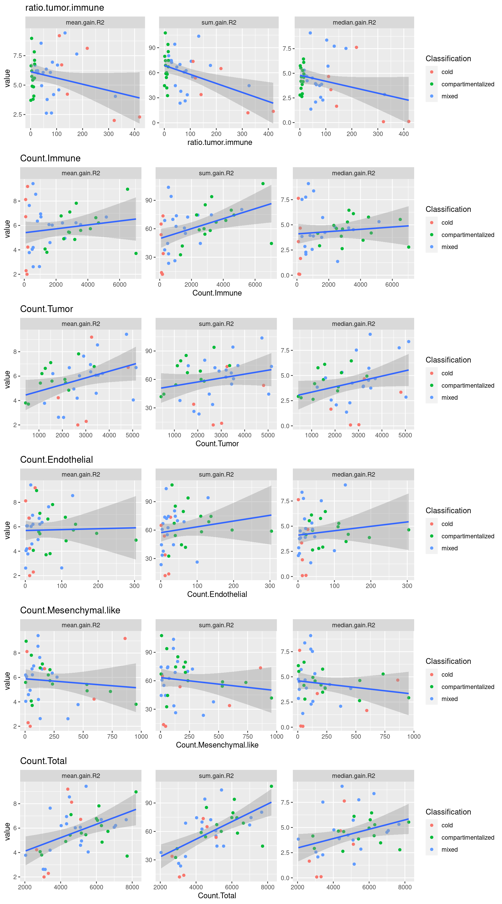
Correlation Plot:
walk(c("sum.gain.R2", "mean.gain.R2", "median.gain.R2"), function(test.var) {
ranger.results$improvements %>%
filter(measure == "gain.R2") %>%
filter(target %in% top.targets) %>%
mutate(sample = str_extract(sample, "(?<=_s)[0-9]+")) %>%
group_by(sample) %>%
summarise(sum.gain.R2 = sum(value), mean.gain.R2 = mean(value),
median.gain.R2 = median(value), .groups = "drop") %>%
left_join(sample.meta %>%
rename("Count.Keratin.positive.Tumor" = "Count.Keratin-positive tumor",
"Count.Mesenchymal.like" = "Count.Mesenchymal-like") %>%
select(1:10) %>%
replace(is.na(.), 0) %>%
mutate(Count.Tumor = Count.Tumor + Count.Keratin.positive.Tumor),
by = c("sample" = "SampleID")) %>%
select(!!sym(test.var), ratio.tumor.immune,
Count.Immune, Count.Tumor, Count.Endothelial, Count.Mesenchymal.like,
Count.Total) %>%
cor() %>%
corrplot::corrplot(type = "upper", tl.col = "black")
})

Now taking the top 10 and the bottom 10 samples and comparing their features. Features being the mixing score, the R2 of the intraview for the chosen targets
top.10 <- ranger.results$improvements %>%
filter(measure == "gain.R2") %>%
filter(target %in% top.targets) %>%
mutate(sample = str_extract(sample, "(?<=_s)[0-9]+")) %>%
group_by(sample) %>%
summarise(mean.gain.R2 = sum(value), .groups = "drop") %>%
slice_max(mean.gain.R2, n = 10) %>%
pull(sample)
bottom.10 <- ranger.results$improvements %>%
filter(measure == "gain.R2") %>%
filter(target %in% top.targets) %>%
mutate(sample = str_extract(sample, "(?<=_s)[0-9]+")) %>%
group_by(sample) %>%
summarise(mean.gain.R2 = sum(value), .groups = "drop") %>%
slice_min(mean.gain.R2, n = 10) %>%
pull(sample)Looking at the mixing score (ratio of immune-tumor contacts divided by the number of immune-immune contacts). And we can kinda see that the
sample.meta %>%
mutate(group.tmp = case_when(
SampleID %in% top.10 ~ "top",
SampleID %in% bottom.10 ~ "bottom",
TRUE ~ "middle",
)) %>%
mutate(group.tmp = factor(group.tmp, levels = c("top", "middle", "bottom"))) %>%
ggplot() +
geom_boxplot(aes(x=group.tmp, y=ratio.tumor.immune))
Now what about the simple box plot containing the top targets
ranger.results$improvements %>%
filter(measure == "gain.R2") %>%
mutate(sample = str_extract(sample, "(?<=_s)[0-9]+")) %>%
left_join(sample.meta, by=c("sample" = "SampleID")) %>%
ggplot() +
geom_boxplot(aes(x=Classification, y=value))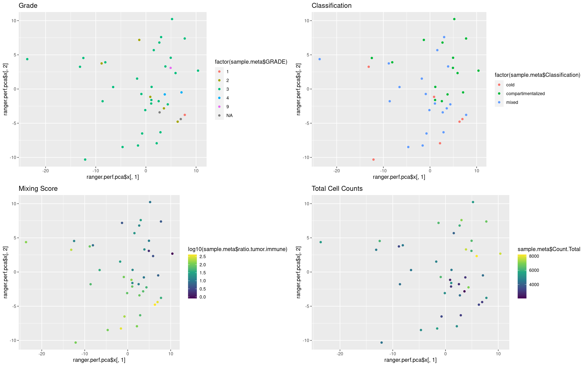
tmp <- ranger.results$improvements %>%
filter(measure == "gain.R2") %>%
mutate(sample = str_extract(sample, "(?<=_s)[0-9]+")) %>%
left_join(sample.meta, by=c("sample" = "SampleID"))
targets <- tmp$target %>% unique
t.test(x = (tmp %>% filter(Classification=="compartimentalized") %>%
pull(value)),
y = (tmp %>% filter(Classification=="mixed") %>%
pull(value)),
alternative = "two.sided")
Welch Two Sample t-test
data: (tmp %>% filter(Classification == "compartimentalized") %>% pull(value)) and (tmp %>% filter(Classification == "mixed") %>% pull(value))
t = 0.92767, df = 1084.8, p-value = 0.3538
alternative hypothesis: true difference in means is not equal to 0
95 percent confidence interval:
-0.2458481 0.6867746
sample estimates:
mean of x mean of y
3.218987 2.998524 So actually the predictions are not overall better for compartimentalized samples. But for which targets is the gain in R2 much different compared to the gain in R2 for mixed samples?
Check by using t.test, not controlled for multiple hypothesis testing!
all.targets <- map(targets, function(t) {
tmp <- ranger.results$improvements %>%
filter(measure == "gain.R2") %>%
mutate(sample = str_extract(sample, "(?<=_s)[0-9]+")) %>%
left_join(sample.meta, by=c("sample" = "SampleID")) %>%
filter(target == t)
test.results <- t.test(x = (tmp %>% filter(Classification=="compartimentalized") %>%
pull(value)),
y = (tmp %>% filter(Classification=="mixed") %>%
pull(value)),
alternative = "two.sided")
list("target" = t, "t.test" = test.results)
})
walk(all.targets, function(target.test) {
if (target.test$t.test$p.value < 0.05) {
print(target.test$target)
print(target.test$t.test)
}
})[1] "PD1"
Welch Two Sample t-test
data: (tmp %>% filter(Classification == "compartimentalized") %>% pull(value)) and (tmp %>% filter(Classification == "mixed") %>% pull(value))
t = 2.0727, df = 23.552, p-value = 0.04931
alternative hypothesis: true difference in means is not equal to 0
95 percent confidence interval:
0.006484952 3.978703491
sample estimates:
mean of x mean of y
3.622345 1.629751
[1] "CD31"
Welch Two Sample t-test
data: (tmp %>% filter(Classification == "compartimentalized") %>% pull(value)) and (tmp %>% filter(Classification == "mixed") %>% pull(value))
t = 2.1926, df = 29.978, p-value = 0.03623
alternative hypothesis: true difference in means is not equal to 0
95 percent confidence interval:
0.1079941 3.0434776
sample estimates:
mean of x mean of y
4.204335 2.628599
[1] "CD4"
Welch Two Sample t-test
data: (tmp %>% filter(Classification == "compartimentalized") %>% pull(value)) and (tmp %>% filter(Classification == "mixed") %>% pull(value))
t = 2.903, df = 20.841, p-value = 0.008551
alternative hypothesis: true difference in means is not equal to 0
95 percent confidence interval:
0.2184547 1.3237747
sample estimates:
mean of x mean of y
1.0069175 0.2358028
[1] "CD11c"
Welch Two Sample t-test
data: (tmp %>% filter(Classification == "compartimentalized") %>% pull(value)) and (tmp %>% filter(Classification == "mixed") %>% pull(value))
t = 2.7294, df = 22.963, p-value = 0.01196
alternative hypothesis: true difference in means is not equal to 0
95 percent confidence interval:
0.9900908 7.1921080
sample estimates:
mean of x mean of y
7.552832 3.461732
[1] "CSF.1R"
Welch Two Sample t-test
data: (tmp %>% filter(Classification == "compartimentalized") %>% pull(value)) and (tmp %>% filter(Classification == "mixed") %>% pull(value))
t = 2.7518, df = 21.103, p-value = 0.01192
alternative hypothesis: true difference in means is not equal to 0
95 percent confidence interval:
0.3292636 2.3641287
sample estimates:
mean of x mean of y
2.2129598 0.8662636
[1] "CD68"
Welch Two Sample t-test
data: (tmp %>% filter(Classification == "compartimentalized") %>% pull(value)) and (tmp %>% filter(Classification == "mixed") %>% pull(value))
t = 3.4136, df = 24.7, p-value = 0.002217
alternative hypothesis: true difference in means is not equal to 0
95 percent confidence interval:
0.5493122 2.2229578
sample estimates:
mean of x mean of y
2.3169531 0.9308181
[1] "Pan.Keratin"
Welch Two Sample t-test
data: (tmp %>% filter(Classification == "compartimentalized") %>% pull(value)) and (tmp %>% filter(Classification == "mixed") %>% pull(value))
t = -2.3848, df = 20.395, p-value = 0.02689
alternative hypothesis: true difference in means is not equal to 0
95 percent confidence interval:
-5.0247679 -0.3390167
sample estimates:
mean of x mean of y
1.139232 3.821125
[1] "H3K9ac"
Welch Two Sample t-test
data: (tmp %>% filter(Classification == "compartimentalized") %>% pull(value)) and (tmp %>% filter(Classification == "mixed") %>% pull(value))
t = -2.5984, df = 29.213, p-value = 0.01453
alternative hypothesis: true difference in means is not equal to 0
95 percent confidence interval:
-1.6093511 -0.1919723
sample estimates:
mean of x mean of y
1.289872 2.190534 View Contributions
mistyR::plot_view_contributions(ranger.results)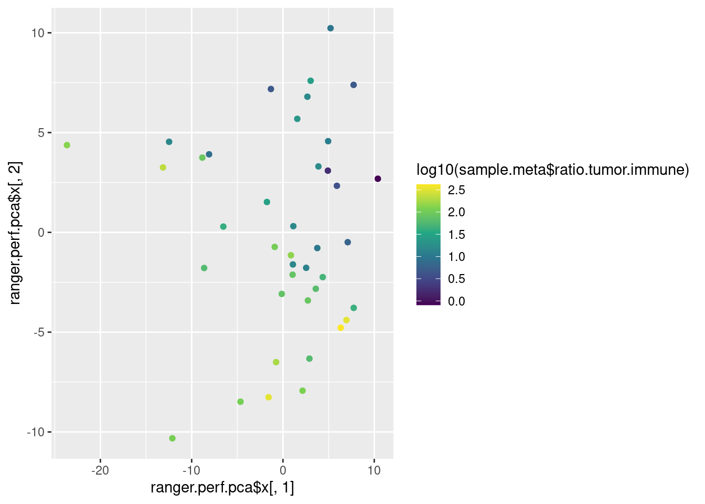
Also looking at the variability.
ranger.results$contributions %>%
filter(!str_starts(view, "p\\."), view != "intercept") %>%
ggplot() +
geom_boxplot(aes(x = target, y = value)) +
theme(axis.text.x = element_text(angle = 90, hjust = 1)) +
facet_wrap(~ view, ncol = 1)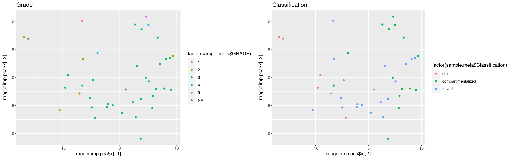
Importances
Intra:
mistyR::plot_interaction_heatmap(ranger.results, view = "intra", clean = TRUE)
Juxtaview:
mistyR::plot_interaction_heatmap(ranger.results, view = "juxta.40", clean = TRUE)
Paraview:
I think it is quite interesting that Beta-catenin seems to be important to predict Pan.Keratin, Keratin.6, and EGFR expression. The other way it also true, meaning that Keratin6 and Pan.Keratin are useful in predicting Beta-catenin expression. This probably only shows that those proteins are coexpressed in cancer.
Though, if they are only co-expressed wouldn’t we expect to actually see the same relationship in the intraview (which we do not!).
mistyR::plot_interaction_heatmap(ranger.results, view = "para.120", clean = TRUE)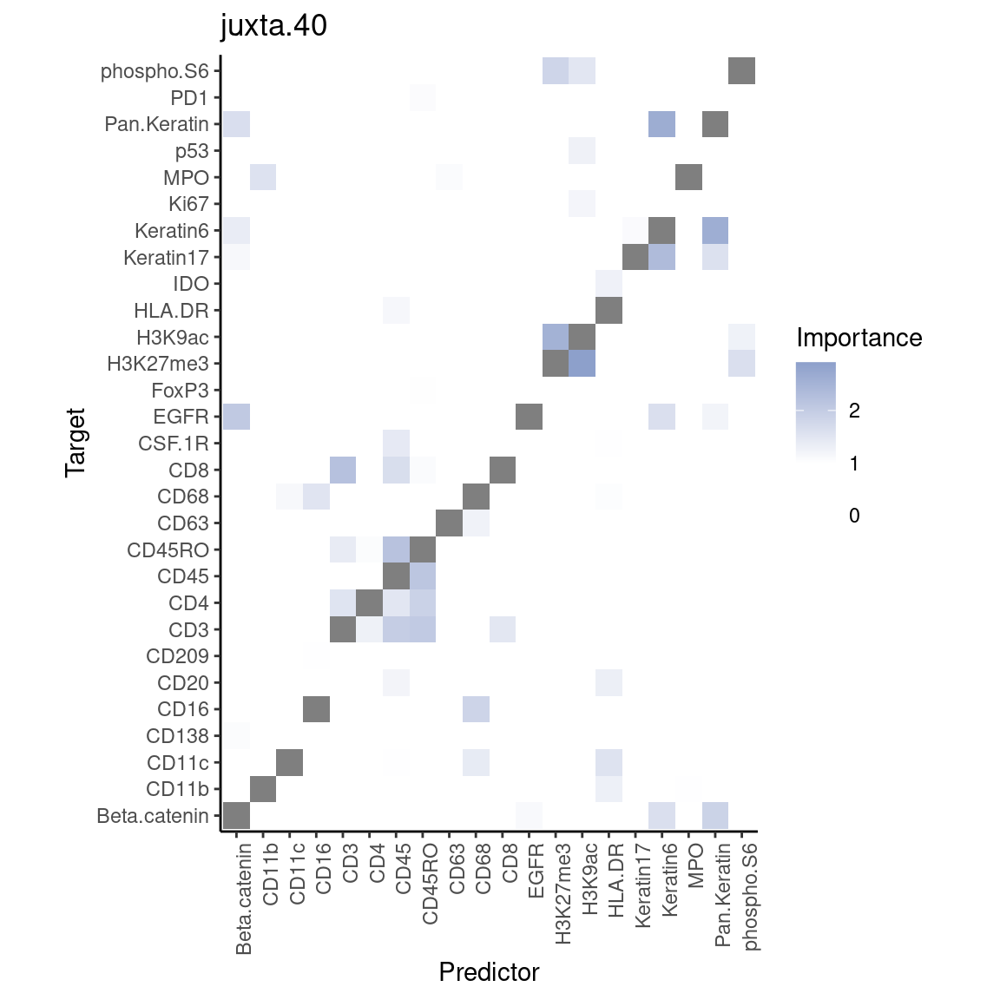
Now what about looking at some contrasts.
plot_contrast_heatmap(ranger.results,
from.view = "intra",
to.view = "para.120",
cutoff = 0.5)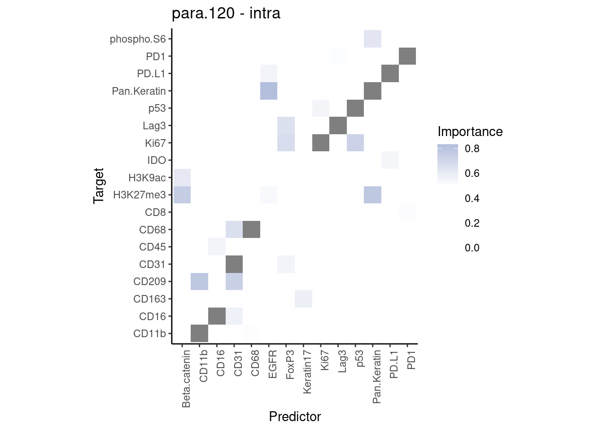
plot_contrast_heatmap(ranger.results,
from.view = "para.120",
to.view = "intra",
cutoff = 2)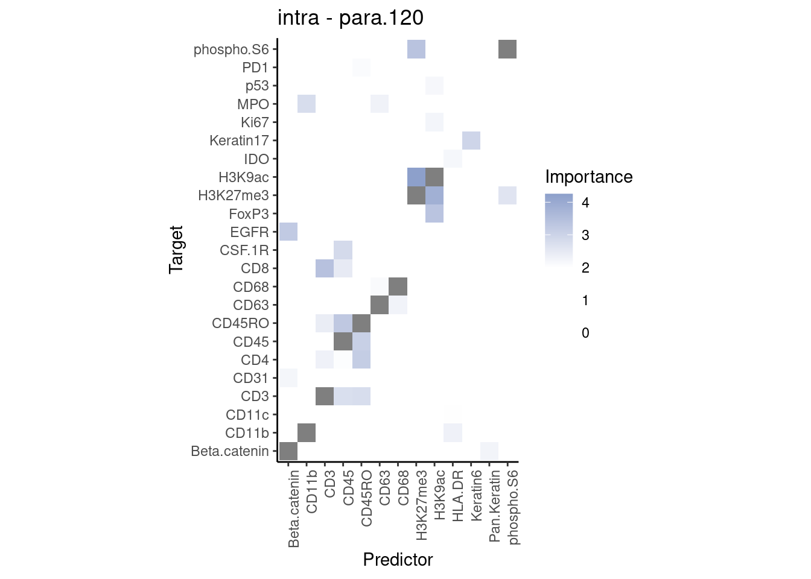
Signatures
Performance
ranger.perf.sig <- mistyR::extract_signature(ranger.results, "performance")
ranger.perf.pca <- stats::prcomp(ranger.perf.sig %>% select(-sample))p1 <- ggplot() +
geom_point(aes(x=ranger.perf.pca$x[,1], y=ranger.perf.pca$x[,2],
col=factor(sample.meta$GRADE))) +
labs(title = "Grade")
p2 <- ggplot() +
geom_point(aes(x=ranger.perf.pca$x[,1], y=ranger.perf.pca$x[,2],
col=factor(sample.meta$Classification))) +
labs(title = "Classification")
p3 <- ggplot() +
geom_point(aes(x=ranger.perf.pca$x[,1],
y=ranger.perf.pca$x[,2],
col=log10(sample.meta$ratio.tumor.immune))) +
scale_color_viridis_c() +
labs(title = "Mixing Score")
p4 <- ggplot() +
geom_point(aes(x=ranger.perf.pca$x[,1],
y=ranger.perf.pca$x[,2],
col=sample.meta$Count.Total)) +
scale_color_viridis_c() +
labs(title = "Total Cell Counts")
gridExtra::grid.arrange(p1, p2, p3, p4, ncol=2)Which factors drive the variance in the results?
fviz_pca_var(ranger.perf.pca, col.var="contrib",
gradient.cols = c("#00AFBB", "#E7B800", "#FC4E07"),
repel = TRUE)Warning: ggrepel: 33 unlabeled data points (too many overlaps). Consider
increasing max.overlaps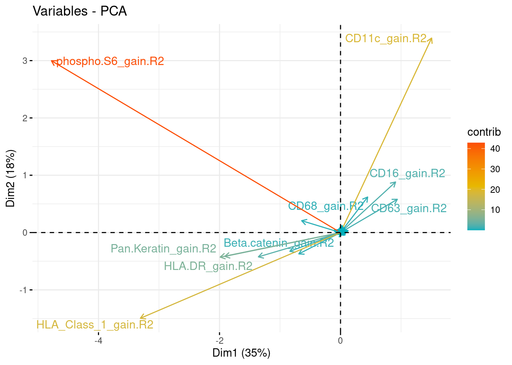
We kind of see that the gain in R2 for CD11c differentiates mixed and compartimentalized tumors. Since CD11c is a marker for dendritic cells (DCs) what does this mean? That DCs is only present in comparitmentalized tumors and thus we can only gain explained variance for CD11c here?
And looking at the boxplot below, this is the case. In the compartimentalized samples there are more DCs (see DC + CD/Mono).
meta %>%
mutate(SampleID = as.character(SampleID)) %>%
left_join(sample.meta, by="SampleID") %>%
filter(Classification != "cold") %>%
group_by(Classification, SampleID) %>%
count(immuneGroup) %>%
ggplot() +
geom_boxplot(aes(x=immuneGroup, y=n, col=Classification)) +
theme(axis.text.x = element_text(angle = 90, vjust = 0.5, hjust=1)) +
scale_y_log10()Check the DC counts in the performance PCA. And actually it is true
ggplot() +
geom_point(aes(x=ranger.perf.pca$x[,1],
y=ranger.perf.pca$x[,2],
col=(
meta %>%
group_by(SampleID) %>%
filter(immuneGroup %in% c("DC/Mono", "DC")) %>%
mutate(immuneGroup = "DC/Mono") %>%
count(immuneGroup) %>%
rbind(tibble(SampleID = 26, immuneGroup="DC/Mono", n=0)) %>%
arrange(SampleID) %>%
pull(n) ) ) ) +
scale_color_viridis_c() +
labs(col = "n.DC")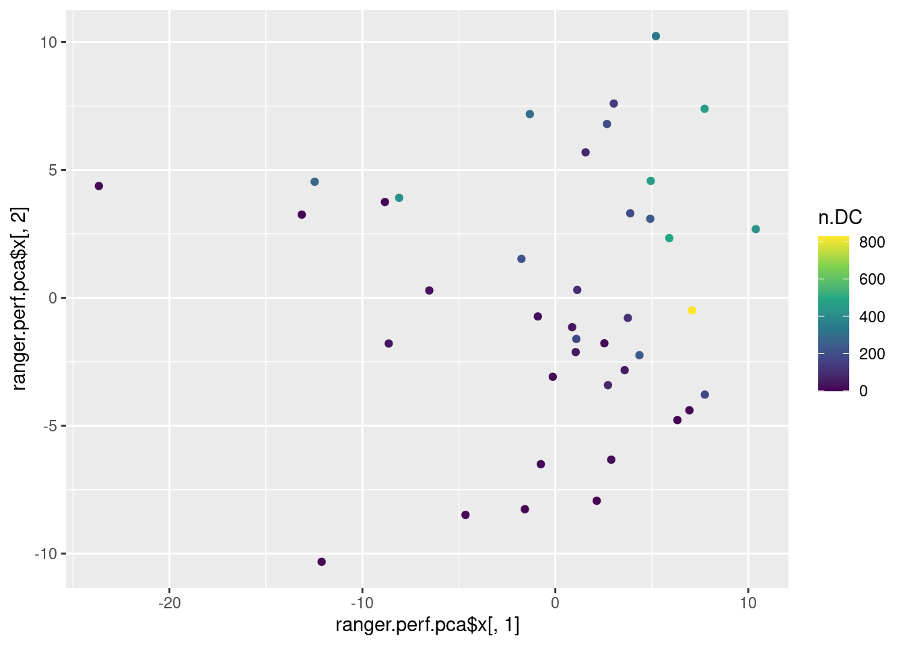
Importance
ranger.imp.sig <- mistyR::extract_signature(ranger.results, "importance")
ranger.imp.pca <- stats::prcomp(ranger.imp.sig %>% select(-sample))Color by Grade.
p1 <- ggplot() +
geom_point(aes(x=ranger.imp.pca$x[,1], y=ranger.imp.pca$x[,2],
col=factor(sample.meta$GRADE))) +
labs(title = "Grade")
p2 <- ggplot() +
geom_point(aes(x=ranger.imp.pca$x[,1], y=ranger.imp.pca$x[,2],
col=factor(sample.meta$Classification))) +
labs(title = "Classification")
gridExtra::grid.arrange(p1, p2, ncol=2)Looking at the variable loadings one can see that the importances are often similar for different views and that the importances are reciprocal, e.g. - CD45 & HLA_Class_1 (= MHC1) - CD63 & CD68 (macrophages) - CD16 & CD11c (natural killer cells, neutrophils, monocytes, and macrophages) - CD16 & CD45
fviz_pca_var(ranger.imp.pca, col.var="contrib",
gradient.cols = c("#00AFBB", "#E7B800", "#FC4E07"),
repel = TRUE)Warning: ggrepel: 528 unlabeled data points (too many overlaps). Consider
increasing max.overlaps
Save data
saveRDS(expr, "data/expression.RDS")
saveRDS(expr.smp, "data/expression_per_sample.RDS")
saveRDS(meta, "data/meta_data.RDS")
saveRDS(sample.meta, "data/sample_meta.RDS")
sessionInfo()R version 4.1.1 (2021-08-10)
Platform: x86_64-pc-linux-gnu (64-bit)
Running under: Ubuntu 20.04.3 LTS
Matrix products: default
BLAS: /usr/lib/x86_64-linux-gnu/blas/libblas.so.3.9.0
LAPACK: /usr/lib/x86_64-linux-gnu/lapack/liblapack.so.3.9.0
locale:
[1] LC_CTYPE=en_US.UTF-8 LC_NUMERIC=C
[3] LC_TIME=en_US.UTF-8 LC_COLLATE=en_US.UTF-8
[5] LC_MONETARY=en_US.UTF-8 LC_MESSAGES=en_US.UTF-8
[7] LC_PAPER=en_US.UTF-8 LC_NAME=C
[9] LC_ADDRESS=C LC_TELEPHONE=C
[11] LC_MEASUREMENT=en_US.UTF-8 LC_IDENTIFICATION=C
attached base packages:
[1] stats graphics grDevices utils datasets methods base
other attached packages:
[1] tiff_0.1-8 factoextra_1.0.7 forcats_0.5.1 stringr_1.4.0
[5] dplyr_1.0.7 purrr_0.3.4 readr_2.0.2 tidyr_1.1.4
[9] tibble_3.1.5 ggplot2_3.3.5 tidyverse_1.3.1 future_1.22.1
[13] mistyR_1.1.13 workflowr_1.6.2
loaded via a namespace (and not attached):
[1] nlme_3.1-152 fs_1.5.0 lubridate_1.8.0 bit64_4.0.5
[5] RColorBrewer_1.1-2 httr_1.4.2 rprojroot_2.0.2 tools_4.1.1
[9] backports_1.2.1 bslib_0.3.1 utf8_1.2.2 R6_2.5.1
[13] mgcv_1.8-38 DBI_1.1.1 colorspace_2.0-2 withr_2.4.2
[17] tidyselect_1.1.1 gridExtra_2.3 curl_4.3.2 bit_4.0.4
[21] compiler_4.1.1 git2r_0.28.0 cli_3.0.1 rvest_1.0.1
[25] xml2_1.3.2 labeling_0.4.2 sass_0.4.0 scales_1.1.1
[29] distances_0.1.8 digest_0.6.28 foreign_0.8-81 rmarkdown_2.11
[33] rio_0.5.27 pkgconfig_2.0.3 htmltools_0.5.2 parallelly_1.28.1
[37] dbplyr_2.1.1 fastmap_1.1.0 highr_0.9 rlang_0.4.11
[41] readxl_1.3.1 rstudioapi_0.13 jquerylib_0.1.4 generics_0.1.0
[45] farver_2.1.0 jsonlite_1.7.2 vroom_1.5.5 zip_2.2.0
[49] car_3.0-11 magrittr_2.0.1 Matrix_1.3-4 Rcpp_1.0.7
[53] munsell_0.5.0 fansi_0.5.0 abind_1.4-5 lifecycle_1.0.1
[57] stringi_1.7.5 whisker_0.4 yaml_2.2.1 carData_3.0-4
[61] grid_4.1.1 parallel_4.1.1 listenv_0.8.0 promises_1.2.0.1
[65] ggrepel_0.9.1 crayon_1.4.1 lattice_0.20-45 deldir_1.0-5
[69] splines_4.1.1 haven_2.4.3 hms_1.1.1 knitr_1.36
[73] pillar_1.6.3 ggpubr_0.4.0 ggsignif_0.6.3 codetools_0.2-18
[77] reprex_2.0.1 glue_1.4.2 evaluate_0.14 data.table_1.14.2
[81] modelr_0.1.8 vctrs_0.3.8 tzdb_0.1.2 httpuv_1.6.3
[85] cellranger_1.1.0 RANN_2.6.1 gtable_0.3.0 assertthat_0.2.1
[89] openxlsx_4.2.4 xfun_0.26 broom_0.7.9 rstatix_0.7.0
[93] later_1.3.0 viridisLite_0.4.0 pheatmap_1.0.12 corrplot_0.90
[97] globals_0.14.0 ellipsis_0.3.2